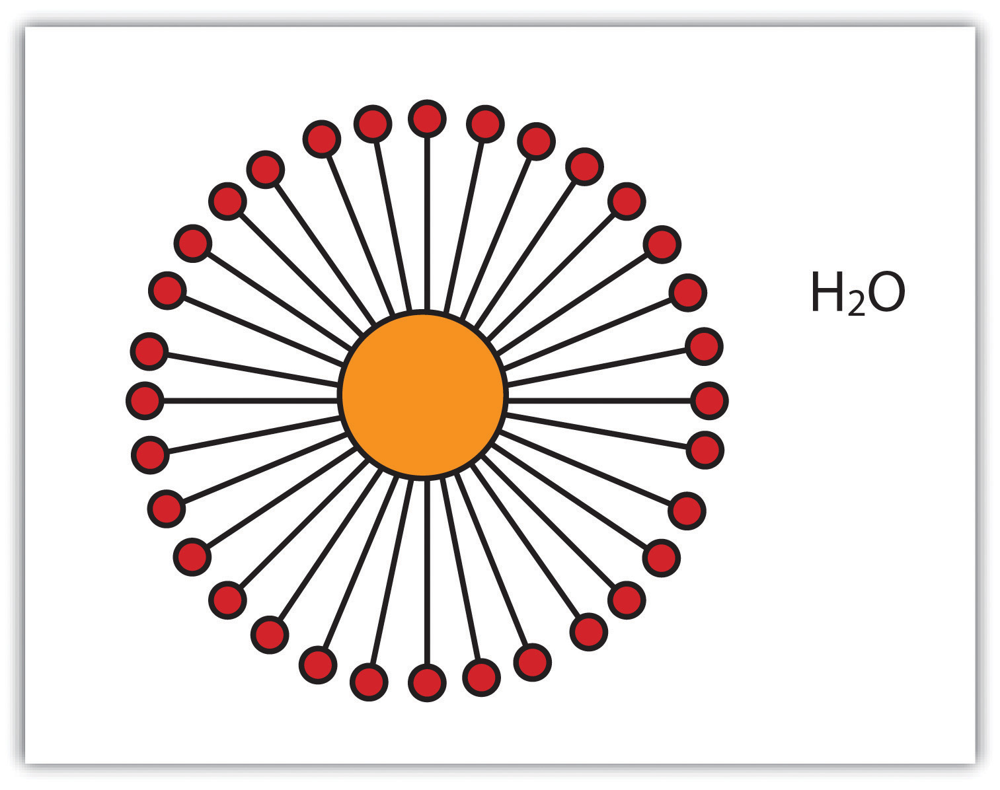
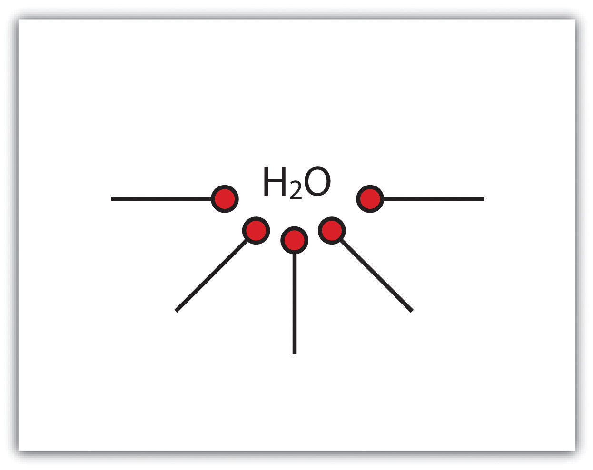
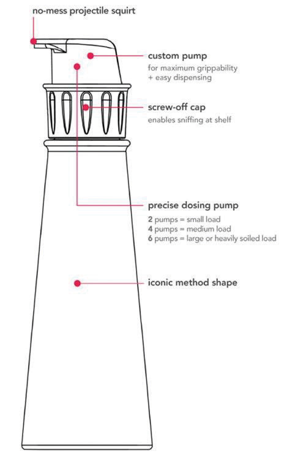
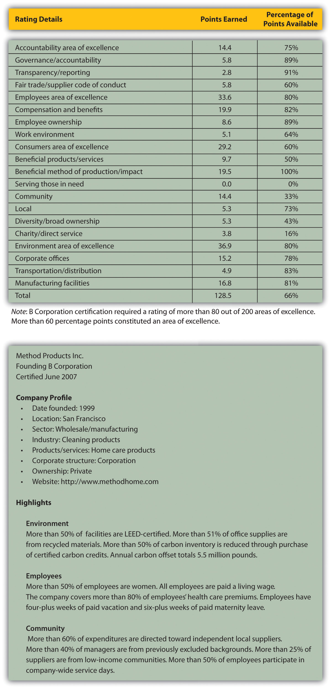
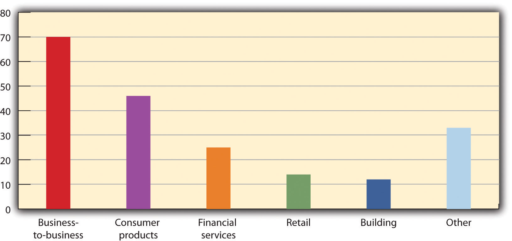

Businesses and consumers are increasingly seeking, even demanding, safer and nontoxic products. Forward-thinking entrepreneurial firms now incorporate sustainable design considerations to provide preferred design and product formulations. This chapter provides examples of companies that have adopted sustainability strategies and as a consequence designed better, healthier, and cleaner products. In these case examples we see companies applying systems and molecular thinking approaches, green chemistry concepts, cradle-to-cradle design ideas, and green supply-chain practices to meet the growing demand for “clean” products.
We introduce this chapter with a background discussion on green supply chains. This background material applies to all the cases, not just those in this chapter. It is important to understand that an individual company’s “clean” and “green” operations and strategy may be real and laudable, but sustainability is a systems concept that, at minimum, applies to the network of suppliers and buyers composing the value chain. Students should be sure to apply the green supply chain background information to all the cases discussed.
Regardless of how you might feel about Walmart, the effect of the company’s sustainability policies are being felt worldwide through its supply chains. On February 1, 2007, Walmart President and CEO Lee Scott announced his company’s “Sustainability 360” program would expand Walmart’s sustainability efforts from its operations and into its supply chains by “tak[ing] in,” as Scott said, “our entire company—our customer base, our supplier base, our associates, the products on our shelves, the communities we serve.”Walmart, “Wal-Mart CEO Lee Scott Unveils ‘Sustainability 360,’” news release, February 1, 2007, accessed January 10, 2011, http://walmartstores.com/pressroom/news/6237.aspx. Walmart customers could now track the company’s “Love, Earth” jewelry all the way back to the mine or buy fish certified by the Marine Stewardship Council. In 2010 the company announced the goal of a twenty-million-metric-ton greenhouse gas emission reduction from its global supply chain (encompassing over one hundred thousand suppliers).Walmart, “Sustainability Fact Sheet: Wal-Mart Takes the Lead on Environmental Sustainability,” news release, March 1, 2010, accessed January 30, 2011, http://walmartstores.com/download/2392.pdf. Furthermore, Walmart enlisted the nonprofit Carbon Disclosure Project, institutional investors with $41 trillion in assets as of September 2007, to help Walmart’s suppliers of DVDs, toothpaste, soap, milk, beer, vacuum cleaners, and soda to assess and reduce their carbon footprints.Ylan Q. Mui, “Wal-Mart Aims to Enlist Suppliers in Green Mission,” Washington Post, September 25, 2007, accessed January 10, 2011, http://www.washingtonpost.com/wp-dyn/content/article/2007/09/24/AR2007092401435.html. Indeed, with roughly one hundred thousand suppliers, two million employees, and millions of customers per day,Walmart, “Sustainability Fact Sheet: Wal-Mart Takes the Lead on Environmental Sustainability,” news release, March 1, 2010, accessed January 30, 2011, http://walmartstores.com/download/2392.pdf. Walmart’s operations and those it encouraged, from product design and resource extraction through final consumption and disposal, could massively influence societies and the natural environment. As such impacts attracted attention, so did the benefits of and the need for greener supply networks.
Green supply chains (GSCs)Approaches to sourcing and production that consider sustainability for every participant at every step, from design to manufacture, transportation, storage, and use to eventual disposal or recycling. became Supply Chain Digest’s number one supply-chain trend of 2006 as more companies such as Walmart embraced them.Dan Gilmore, “Top Ten Supply Chain Trends of 2006,” Supply Chain Digest, January 4, 2006, accessed January 10, 2011, http://www.scdigest.com/assets/FirstThoughts/07-01-04.cfm?cid=871&ctype=content. Fully developed green supply chains consider sustainability for every participant at every step, from design to manufacture, transportation, storage, and use to eventual disposal or recycling. This attentiveness would reduce waste, mitigate legal and environmental risks, minimize and possibly eliminate adverse health impacts throughout the value-added process, improve the reputations of companies and their products (enhancing brands), and enable compliance with increasingly stringent regulations and societal expectations. Thus GSCs offer the opportunity to boost efficiency, value, and access to markets through improving a company’s environmental, social, and economic performance.
Figure 6.1 The Conventional Supply Chain

In its simplest form, a conventional supply chain assumes that firms take raw materials at the beginning of the supply chain and transform them into a product at the end of the supply chain. Ultimately, the supply chain terminates at the point of the final buyer purchasing and using the product (see Figure 6.1 "The Conventional Supply Chain"). Vertical integration absorbs steps in the supply chain within a single corporation that conducts exchange through internal transfer pricing agreements. Disaggregation maintains ownership in discrete businesses that determine prices through market-based transactions.
A company that sells a final product must meet certain requirements and interact with suppliers, third-party logistics providers, and other stakeholder groups that can influence the entire process. Each institution tries to shape the supply chain to its own advantage. As the product moves from design to consumption (black arrows), waste and other problems (gray arrows) accrue. Whether those problems are unfair wages, deforestation, or air pollution, these costs are not necessarily reflected in the price of the finished product but are instead externalized to the public in some fashion or expected to be borne by intermediate links in the conventional chain.
While the term supply chain implies a one-way, linear relationship among participants (e.g., from concept, to resource extraction, to processing, to component manufacturing, to system integration, to final assembly, etc.), the chain is more accurately described as a network of individuals and organizations. Managing such networks can become quite complex, especially as they sprawl over more of the globe. Conventional supply-chain management plans, implements, and controls the operations of the supply chain as efficiently as possible—typically, however, from a limited vantage point that ignores and externalizes many costs.
In contrast, a green supply chain takes a broader, systems view that internalizes some of these costs and ultimately turns them into sources of value. Green supply chains thus modify conventional supply chains in two significant ways: they increase sustainability and efficiency in the existing forward supply chain and add an entirely new reverse supply chain (see Figure 6.2 "The Green Supply Chain").
Figure 6.2 The Green Supply Chain

A company can select various ways to improve the sustainability of its logistics systems. The company may communicate sustainability standards backward to suppliers and require them to adopt environmental management systems or certifications, such as ISO 14001; survey and monitor suppliers’ current practices or products for their sustainability and offer training, technology, and incentives to improve those practices or products;According to the International Organization for Standardization, which established this qualification, ISO 14001 “gives the requirements for quality management systems [and] is now firmly established as the globally implemented standard for providing assurance about the ability to satisfy quality requirements and to enhance customer satisfaction in supplier–customer relationships.” International Organization for Standardization, “ISO 14001:2004,” accessed January 10, 2011, http://www.iso.org/iso/iso_catalogue/catalogue_tc/catalogue_detail.htm?csnumber=31807. require suppliers to avoid certain hazardous ingredients and label others; and/or ask suppliers and other supporting firms, such as transportation companies, to suggest ways to improve the efficiency and sustainability of the whole process. Hence companies “greening” their supply chains are likely to communicate and collaborate more with suppliers and subcontractors to innovate and find the best solutions. They might also reach out to nongovernmental organizations (NGOs) and government agencies for further assistance.
For example, US-based DesignTex, in the 1990s a leader in the contract textile industry and now a subsidiary of US commercial furniture manufacturer Steelcase,DesignTex, “Designtex, A Steelcase Company: Our Company,” accessed January 30, 2011, http://store.designtex.com/ourcompany.aspx?f=35398. chose to pursue an environmentally friendly commercial upholstery fabric. DesignTex collaborated with a small Swiss firm called Rohner Textil AG, chemical corporation Ciba Geigy, and the Environmental Protection Encouragement Agency (a German NGO) to determine product specifications, develop fabric requirements, and identify substitute benign chemicals for the toxic chemicals present along the fabric supply chain.Matthew M. Mehalik, “Sustainable Network Design: A Commercial Fabric Case Study,” Interfaces: International Journal of the Institute for Operations Research and the Management Sciences 30, no. 3 (May/June 2000): 180–89. The new product’s supply chain originated from the wool of free-range sheep and ramie grown without pesticides to a yarn-twisting mill and dye manufacturers, with scraps of the textile generated along the way being sold to farmers and gardeners for mulch.
Surprisingly, the production changes did not just reduce DesignTex’s environmental impact; they also added value: The factory’s effluent became cleaner than the incoming water supply. Regulatory paperwork was eliminated. Workers no longer needed protective masks or gloves, which eliminated health risks and liability exposure.William McDonough and Michael Braungart, “Waste Equals Food,” in Cradle to Cradle: Remaking the Way We Make Things (New York: North Point Press, 2002). Because of these decreased costs and the tax relief for the accompanying environmental investments, the innovation showed a payback period of only five years.Matthew M. Mehalik, “Sustainable Network Design: A Commercial Fabric Case Study,” Interfaces: International Journal of the Institute for Operations Research and the Management Sciences 30, no. 3 (May/June 2000): 180–89. It also was an early, successful illustration of cradle-to-cradle design, the cyclical design protocol that allows biologically benign products to safely return to nature.
In addition to dramatically improving conventional supply-chain logistics, green supply chains extend past the point of product use, where conventional chains end, and consider how to recover and reuse materials—questions of reverse logisticsThe part of the supply chain that takes used products from consumers and recycles, refurbishes, or otherwise disposes of those products.. Many companies already have rudimentary reverse logistics systems to deal with customers’ returns of items they do not want or that were found defective or otherwise unsatisfactory. An expanded reverse logistics system would ultimately replace the linearity of most production methods—raw materials, to processing, to further conversions and modification, to ultimate product, to use, to disposal—with a cradle-to-cradle, cyclical path or closed loop that begins with the return of used, outmoded, out-of-fashion, and otherwise “consumed” products. The products are either recycled and placed back into the manufacturing stream or broken down into compostable materials. The cycle is never ending because materials return to the land in safe molecular structures (taken up and used by organisms as biological nutrients) or are perpetually used within the economy as input for new products (technical nutrients).
Companies typically funnel spent items from consumers into the reverse supply chain by leasing their products or providing collection points or by other means of recovering the items once their service life ends.Shad Dowlatshahi, “Developing a Theory of Reverse Logistics,” Interfaces: International Journal of the Institute for Operations Research and the Management Sciences 30, no. 3 (May/June 2000): 143–55. For example, Canon and Xerox provide free shipping to return used toner cartridges and have thus collectively recovered over one hundred thousand tons of ink and cartridges since 1990.Canon, “Toner Cartridge Return Program,” accessed October 2, 2009, http://www.usa.canon.com/templatedata/AboutCanon/ciwencrpr.html; Xerox, “Prevent and Manage Waste,” accessed January 10, 2011, http://www.xerox.com/about-xerox/recycling/supplies/enus.html.
Once collected, whether by the original manufacturer or a third party, the products could be inspected and sorted. Some items might return quickly to the supply chain with only minimal repair or replacement of certain components, whereas other products might need to be disassembled, remanufactured, or cannibalized for salvageable parts while the remnant is recycled or sent to a landfill or incinerator. “Companies that remanufacture are estimated to save 40–60 percent of the cost of manufacturing a completely new product…while requiring only 20 percent of the effort,” leading to significant, structural savings, wrote Shad Dowlatshahi in Interfaces.Shad Dowlatshahi, “Developing a Theory of Reverse Logistics,” Interfaces: International Journal of the Institute for Operations Research and the Management Sciences 30, no. 3 (May/June 2000): 144. Moreover, the reverse supply chain might spawn new suppliers as well as other sources of revenue for companies that engage in collection, disassembly, and so on, making the entire network more efficient.Joy M. Field and Robert P. Sroufe, “The Use of Recycled Materials in Manufacturing: Implications for Supply Chain Management and Operations Strategy,” International Journal of Production Research 45, no. 18–19 (October 2007): 4439–63. This concept of an eco-efficient closed loop thereby makes green supply chains a central piece of sustainable industrial ecosystems.
The same techniques that improve the sustainability of conventional logistics also aid reverse logistics. In addition, green supply chains fundamentally require two tools: life-cycle assessment (LCA) and design for environment (DfE). According to the US Environmental Protection Agency’s National Risk Management Research Laboratory, LCA takes the viewpoint of a product, process, or service by “(1) compiling an inventory of relevant energy and material inputs and environmental releases; (2) evaluating the potential environmental impacts associated with identified inputs and releases; [and] (3) interpreting the results to help you make an informed decision,” typically to minimize negative impacts across the entire life of the product.US Environmental Protection Agency, “Life-Cycle Assessment (LCA),” accessed January 10, 2011, http://www.epa.gov/ORD/NRMRL/lcaccess. For examples, see Maurizio Bevilacqua, Filippo Emanuele Ciarapica, and Giancarlo Giacchetta, “Development of a Sustainable Product Lifecycle in Manufacturing Firms: A Case Study,” International Journal of Production Research 45, no. 18–19 (2007): 4073–98, as well as Stelvia Matos and Jeremy Hall, “Integrating Sustainable Development in the Supply Chain: The Case of Life Cycle Assessment in Oil and Gas and Agricultural Biotechnology,” Journal of Operations Management 25, no. 6 (2007): 1083–82. This analysis helps identify the points in the green supply chain that detract from ultimate sustainability and establishes a baseline for improvement. For example, Walmart’s third-party logistics provider in Canada began using railways more than roads to supply ten stores, thereby cutting carbon emissions by 2,600 tons. The company estimated it would save another $4.5 million and prevent 1,400 tons of waste annually by switching from cardboard to plastic shipping crates.“Wal-Mart’s ‘Green’ Campaign Pays Off in Canada,” DC Velocity, October 1, 2007, accessed October 2, 2009, http://www.dcvelocity.com/news/?article_id=1338.
Application of DfE acknowledges that design determines a product’s materials and the processes by which the product is made, shipped, used, and recovered. Hence DfE could be used to avoid toxic materials from the outset; minimize energy and material inputs; and facilitate disassembly, repair, and remanufacturing. For instance, Hewlett Packard (HP) used DfE “product stewards,” whose role, HP explained, was as follows: “[Product stewards] are integrated into product design and research and development teams to identify, prioritize, and recommend environmental design innovations to make products easier to disassemble and recycle. Such features include modular designs, snap-in features that eliminate the need for glues and adhesives, fewer materials, and molded-in colors and finishes instead of paint, coatings, or plating.”Hewlett-Packard, “HP to Eliminate Brominated Flame Retardants from External Case Parts of All New HP Brand Products,” news release, November 1, 2005, accessed January 11, 2011, http://www.hp.com/hpinfo/newsroom/press/2005/051101a.html.
Conversely, process designs could influence product designs through new technology that implements an innovative idea. For example, in the Walden Paddlers case discussed in Section 4.5 "Adaptive Collaboration through Value-Added Networks", Hardigg Industries was a plastics-molding company that partnered with Clearvue Plastics to create plastic pellets with 50 percent recycled content, which Hardigg thought was impossible until it was encouraged by the entrepreneurial founder of Walden Paddlers. Later, Hardigg was able to change its rotomolding technology to allow for the use of 100 percent recycled resins. Through the use of recycled materials and Clearvue’s innovation, Hardigg was able to lower costs, establish a competitive advantage within its industry, attract new customers, and increase customer satisfaction.Paul H. Farrow, Richard R. Johnson, and Andrea L. Larson, “Entrepreneurship, Innovation, and Sustainability Strategies at Walden Paddlers, Inc.,” Interfaces: International Journal of the Institute for Operations Research and the Management Sciences 30, no. 3 (May/June 2000): 215–25.
Although green supply chains could present novel challenges, they had spread to address a convergence of legal requirements, consumer expectations, and competition for continued profitability. In 2001, a study of twenty-five suppliers showed 80 percent received significant requests to improve the environmental quality of their operations and products, and they in turn asked their suppliers to do the same.Business for Social Responsibility Education Fund, Suppliers’ Perspectives on Greening the Supply Chain (San Francisco: Business for Social Responsibility Education Fund, 2001), accessed January 11, 2011, http://www.getf.org/file/toolmanager/O16F15429.pdf. A larger survey from 2008 indicated 82 percent of respondents were planning to implement or were already implementing green supply-chain management strategies.Walfried M. Lassar and Adrian Gonzalez, The State of Green Supply Chain Management: Survey Results (Miami, FL: Ryder Center for Supply Chain Management, Florida International University, 2008), accessed January 11, 2011, http://grci.calpoly.edu/projects/sustaincommworld/pdfs/WP_Florida_Supply_Chain_Mgmt.pdf. The trend toward green supply chains was expected to continue.
Concern for green supply-chain topics emerged in the 1990s as, on one hand, globalization and outsourcing made supply networks increasingly complex and diverse and, on the other hand, new laws and consumer expectations increasingly demanded that companies take more responsibility for their products across the entire life of those products.Jonathan D. Linton, Robert Klassen, and Vaidyanathan Jayaraman, “Sustainable Supply Chains: An Introduction,” Journal of Operations Management 25, no. 6 (November 2007): 1075–82; Going Green Upstream: The Promise of Supplier Environmental Management (Washington, DC: National Environmental Education and Training Foundation, 2001), accessed January 11, 2011, http://www.neefusa.org/pdf/SupplyChainStudy.pdf. Companies had to more closely monitor their suppliers. Total quality management and conventional supply-chain management adapted to address some of these challenges in “a paradigm shift [that] occurred when the scope of analysis was broadened beyond what was customary [for operations analysts] at the time.”Charles J. Corbett and Robert D. Klassen, “Expanding the Horizons: Environmental Excellence as Key to Improving Operations,” Manufacturing and Service Operations Management 8, no. 1 (Winter 2006): 5–22. These broader management practices and ISO 9001 in turn laid the foundation for green supply-chain management and ISO 14001.
Between 2000 and 2009, the increased emphasis on sustainability expanded the scope further and deeper into environmental, public health, and community/social issues and embraced stakeholders beyond consumers and investors.Charles J. Corbett and Robert D. Klassen, “Expanding the Horizons: Environmental Excellence as Key to Improving Operations,” Manufacturing and Service Operations Management 8, no. 1 (Winter 2006): 5–22. This new paradigm of “extended producer responsibility,” which included a call for greater transparency and accountability, also compelled companies toward green supply-chain design.Markus Klausner and Chris T. Hendrickson, “Reverse-Logistics Strategy for Product Take-Back,” Interfaces: International Journal of the Institute for Operations Research and the Management Sciences 30, no. 3 (May/June 2000): 156–65.
Laws to reduce human exposure to hazardous and toxic chemicals drive corporate attention to supply-chain materials use. Noncompliance with laws could hurt profits, market share, and brand image. For example, Dutch customs agents prevented approximately $160 million worth of Sony PlayStation consoles from entering Holland in December 2001 because cadmium levels in their wiring exceeded levels set by Dutch law.Adam Aston, Andy Reinhardt, and Rachel Tiplady, “Europe’s Push for Less-Toxic Tech,” BusinessWeek, August 9, 2005, accessed January 11, 2011, http://www.businessweek.com/technology/content/aug2005/tc2005089_9729 _tc_215.htm. Sony disputed the root cause with its Taiwanese cable supplier but nonetheless had to pay to store, refurbish, and repack the machines.
Most forward-thinking global firms moved toward adopting consistent standards across all their markets, as opposed to different standards for different countries. Hence the tightest rules from one place tended to become the de facto global standard. For example, the EU’s directives 2002/95/EC on “the Restriction of the Use of certain Hazardous Substances in Electrical and Electronic Equipment” (RoHS) and 2002/96/EC on “Waste Electrical and Electronic Equipment” (WEEE) had many ramifications for suppliers and producers in the electronics industry. RoHS required all manufacturers of electronics and electrical equipment sold in Europe by July 2006 to substitute safer materials for six hazardous substances, such as lead and chromium. WEEE required producers to collect their electronic waste from consumers free of charge.European Commission, “Environment: Waste Electrical and Electronic Equipment,” accessed January 11, 2011, http://ec.europa.eu/environment/waste/weee/index_en.htm. The EU’s 2006 directive on “Registration, Evaluation, Authorization, and Restriction of Chemicals” (REACH) might further tighten global standards for producers and suppliers because it “gives greater responsibility to industry to manage the risks from chemicals and to provide safety information on the substances.”European Commission, “Environment: REACH,” accessed January 11, 2011, http://ec.europa.eu/environment/chemicals/reach/reach_intro.htm. Similar efforts have begun in Asia with Japan’s Green Procurement rules and China’s Agenda 21 goals.Adam Aston, Andy Reinhardt, and Rachel Tiplady, “Europe’s Push for Less-Toxic Tech,” BusinessWeek, August 9, 2005, accessed January 11, 2011, http://www.businessweek.com/technology/content/aug2005/tc2005089_9729 _tc_215.htm.
Consumers and institutional investors, meanwhile, have exerted pressure on companies through a variety of tactics from socially responsible investment screening criteria to market campaigns for engaging in fair trade or ending sweatshop labor. Failure to publicly improve practices anywhere along the supply chain could hurt brand image and curtail access to markets. American universities and colleges founded the Worker Rights Consortium in 2000 “to assist universities with the enforcement of their labor rights codes of conduct, which were adopted to protect the rights of workers producing apparel and other goods bearing university names and logos.”Worker Rights Consortium, “Mission: History,” accessed October 2, 2009, http://www.workersrights.org/about/history.asp. Manufacturers such as Canada’s Hudson Bay Company began to audit suppliers’ factories for compliance with labor standards.Tim Reeve and Jasper Steinhausen, “Sustainable Suppliers, Sustainable Markets,” CMA Management 81, no. 2 (April 2007): 30–33. By 2005, the Investor Environmental Health Network, following the effective strategy of institutional investors negotiating with companies for more action and accountability on climate change, was encouraging investment managers and corporations to reduce high-risk toxic chemicals used in their products and used by companies in which they invest.
Businesses might face novel challenges when implementing, operating, or auditing green supply chains. Given these challenges, businesses that already used an environmental management system were more equipped to build a green supply chain.Nicole Darnall, G. Jason Jolley, and Robert Handfield, “Environmental Management Systems and Green Supply Chain Management: Compliments for Sustainability?” Business Strategy and the Environment 17, no. 1 (2008): 30–45; Toshi H. Arimura, Nicole Darnall, and Hajime Katayama, Is ISO-14001 a Gateway to More Advanced Voluntary Action? A Case for Green Supply Chain Management, RFF DP 09-05 (Washington, DC: Resources for the Future, 2009), accessed January 11, 2011, http://www.rff.org/documents/rff-dp-09-05.pdf. Nonetheless, all businesses could take steps to green their chains.
“Green” has become strategic. When sustainability is recognized as an operating and strategic opportunity, as in the cases of General Electric and Walmart, senior management supports green supply-chain initiatives and integrates them into the business’s core capabilities.Terry F. Yosie, Greening the Supply Chain in Emerging Markets: Some Lessons from the Field (Oakland, CA: GreenBiz, 2008), accessed January 11, 2011, http://www.greenbiz.com/sites/default/files/document/GreenBiz_Report_Greening _the_Supply_Chain.pdf; Samir K. Srivastava, “Green Supply-Chain Management: A State-of-the-Art Literature Review,” International Journal of Management Reviews 9, no. 1 (March 2007): 53–80. In 2010, however, authority over green supply chains still tended to be held by a variety of groups, such as supply-chain managers, environmental health and safety offices, and sustainability divisions.Walfried M. Lassar and Adrian Gonzalez, The State of Green Supply Chain Management: Survey Results (Miami, FL: Ryder Center for Supply Chain Management, Florida International University, 2008), accessed January 11, 2011, http://grci.calpoly.edu/projects/sustaincommworld/pdfs/WP_Florida_Supply_Chain_Mgmt.pdf. Personnel who might have once functioned separately within a company often had to collaborate and create new teams for green supply chains to work effectively, and those people needed time for the green supply chains to yield their maximum benefits.
Companies must actively include suppliers and service providers in greening supply chains so that they can build trust, lend their own expertise to increase sustainability, and receive adequate guidance and assistance in improving their operations.Mark P. Sharfman, Teresa M. Shaft, and Robert P. Anex Jr., “The Road to Cooperative Supply-Chain Environmental Management: Trust and Uncertainty among Pro-active Firms,” Business Strategy and the Environment 18, no. 1 (January 2009): 1–13. Businesses must state clear and reasonable expectations and allow sufficient lead time for suppliers to respond. They must also be willing to listen to suppliers.Business for Social Responsibility Education Fund, Suppliers’ Perspectives on Greening the Supply Chain (San Francisco: Business for Social Responsibility Education Fund, 2001), accessed January 11, 2011, http://www.getf.org/file/toolmanager/O16F15429.pdf. Furthermore, companies cannot simply issue guidelines from their headquarters; their representatives must instead be available on the ground and cooperating with local contacts to ensure results and prevent increased competition within the supply chain.Terry F. Yosie, Greening the Supply Chain in Emerging Markets: Some Lessons from the Field (Oakland, CA: GreenBiz, 2008), accessed January 11, 2011, http://www.greenbiz.com/sites/default/files/document/GreenBiz_Report_Greening _the_Supply_Chain.pdf. Indeed, suppliers need incentives and assurance that their share of the profit will be protected if they innovate to improve the process because maximizing the overall value of the supply chain may reduce value for individual links.Jonathan D. Linton, Robert Klassen, and Vaidyanathan Jayaraman, “Sustainable Supply Chains: An Introduction,” Journal of Operations Management 25, no. 6 (November 2007): 1078. For example, a design for disassembly that relies on pieces that snap together may obviate the need for suppliers of adhesives, even if it may create demand for disassembly and remanufacturing services.
Reverse supply chains complicate the overall supply chain, and therefore they need to be carefully crafted and considered in overall product design, production, and distribution. Materials and components recovered from used products need to reenter the same forward supply chain as new materials or components. Hence companies must recover items efficiently, train employees or subcontractors to assess properly the condition of a recovered item and what is salvageable and what is not, and manage their inventory to even out variation in the rate and quality of returned items.V. Daniel R. Guide Jr., Vaidyanathan Jayaraman, Rajesh Srivastava, and W. C. Benton, “Supply-Chain Management for Recoverable Manufacturing Systems,” Interfaces: International Journal of the Institute for Operations Research and the Management Sciences 30, no. 3 (May/June 2000): 125–42; also Nils Rudi, David F. Pyke, and Per Olav Sporsheim, “Product Recovery at the Norwegian National Insurance Administration,” Interfaces: International Journal of the Institute for Operations Research and the Management Sciences 30, no. 3 (May/June 2000): 166–79. They must also balance the availability of salvaged components or recycled materials with the need for new components or materials, especially as certain proprietary parts become unavailable or production processes change. In cases when consumers may want the same item they had before with only minor changes, such as a vehicle, businesses will also have to track individual pieces through disassembly and refurbishment.V. Daniel R. Guide Jr., Vaidyanathan Jayaraman, Rajesh Srivastava, and W. C. Benton, “Supply-Chain Management for Recoverable Manufacturing Systems,” Interfaces: International Journal of the Institute for Operations Research and the Management Sciences 30, no. 3 (May/June 2000): 125–42.
After establishing a green supply chain, companies need to assess its performance. In their 2008 survey of seventy supply-chain executives, Lassar and Gonzalez noted, “Almost 40 percent of the 56 firms that are active with green activities do not have any metrics to measure green/sustainability results in their firms.”Walfried M. Lassar and Adrian Gonzalez, The State of Green Supply Chain Management: Survey Results (Miami, FL: Ryder Center for Supply Chain Management, Florida International University, 2008), accessed January 11, 2011, http://grci.calpoly.edu/projects/sustaincommworld/pdfs/WP_Florida_Supply_Chain_Mgmt.pdf. Companies with metrics tracked quantities such as fuel use, packaging, and so on. Another study corroborates this trend: what metrics companies do have tend to cluster around eco-efficiency indicators, such as packaging used or miles traveled, likely because those are the easiest to observe, quantify, and associate with specific actions.Vesela Veleva, Maureen Hart, Tim Greiner, and Cathy Crumbley, “Indicators for Measuring Environmental Sustainability,” Benchmarking 10, no. 2 (2003): 107–19. Companies can, however, include broader measures such as customer satisfaction. However, even then a company may fall short. A systems, health-oriented, and green approach to design does not always work. Some view Frito-Lay’s SunChips compostable bag (offered to the market consistent with biodegradable bags being the fastest growing segment in packaging) as having failed due to its loud noise when handled. Since the crinkling of the bags at up to eighty-five decibels is comparable to glass breaking or an engine revving, the company has gone back to the drawing board with this packaging design.
Finally, green supply chains had to overcome institutional inertia and confusion. First, large companies with financial and political resources tended to resist change, especially at the outset, because of the large capital and infrastructural investments in the status quo. Walmart’s green initiative, however, appears to be the turning point that moves other large enterprises toward green supply chains.
Second, in 2009, no official criteria defined a green supply chain. Standards such as ISO 14000 usually focus on a single entity and not the supply chain, while legal requirements often focus on products and ingredients. ISO 14001, the core voluntary set of standards, is used by firms to design an environmental management system that provides internal monitoring and provides practices, procedures, and tools for systematic efforts to improve performance. However, nothing defines how much of the supply chain is required to have ISO 14000 or other certifications to qualify for the green supply chain label. When Home Depot solicited its suppliers for candidates to its Eco Options marketing campaign, one manufacturer praised the plastic handles of its paintbrushes as more environmentally sensitive than wooden handles, while another praised the wooden handles of its paintbrushes as environmentally better than plastic.Clifford Krauss, “At Home Depot, How Green Is That Chainsaw?” New York Times, June 25, 2007, accessed January 11, 2011, http://www.nytimes.com/2007/06/25/business/25depot.html?_r=1.
The lack of standards could promote individual certification programs, such as the cradle-to-cradle certification provided by McDonough Braungart Design Chemistry, LLC, which implies a corresponding green supply chain. This program, however, is private, largely to protect the confidential business information of its clients to ensure their cooperation, and has therefore been criticized for its lack of transparency.Danielle Sacks, “Green Guru William McDonough Must Change, Demand His Biggest Fans,” Fast Company, February 26, 2009, accessed January 11, 2011, http://www.fastcompany.com/blog/danielle-sacks/ad-verse-effect/william -mcdonough-must-change; Diana den Held, “‘Criticism on Cradle to Cradle? Right on Schedule,’ Says Michael Braungart,” Duurzaam Gebouwd (blog), March 20, 2009, accessed October 2, 2009, http://www.duurzaamgebouwd.nl/index.php?pageID=3946&messageID=1936. However, the cradle-to-cradle approach is now being explored in California as a statewide system to encourage safer, less polluting design protocols. In the worst cases, vague standards or opaque processes can lead to charges of “greenwashing,” or exaggerating or fabricating environmental credentials.Melissa Whellams and Chris MacDonald, “What Is Greenwashing, and Why Is It a Problem?” Business Ethics, accessed October 2, 2009, http://www.businessethics.ca/greenwashing. Greenwashing distracts people who are serious about taking care of the environment with counterproductive activities, misinforms the public, and undermines the credibility of more substantial initiatives of others.
Nonetheless, resistance to change and lack of an official definition reflect extrinsic problems rather than problems intrinsic to the mechanics of green supply chains. Such problems are more about marketing than about function. As green supply chains prove themselves through superior performance, they will likely become more studied, better understood and defined, and more widely spread. Good starting points for firms that understand these issues as strategic are to look at the inherent risks of not examining their supply chains and to envision a future market position in which a green, differentiated product and brand will grow revenues.
Green supply chains yield a wide range of benefits. They can reduce a company’s negative environmental or social impact, decrease operating costs, increase customer service and sales, promote innovation, and mitigate regulatory risk. The most immediate benefits of green supply chains are reduced environmental harm and operations costs. For example, Fuji Xerox adopted a cradle-to-cradle philosophy that emphasized supporting document services over a life cycle rather than selling photocopiers and forgetting about them. Fuji Xerox leased equipment and recovered 99 percent of materials from used equipment in Asia in 2006, saving $13 million on new materials, generating an additional $5.4 million in revenue, and reducing raw material consumption by 2,000 tons at its factories in China.Fuji Xerox Australia, “Fuji Xerox Innovation Makes Business and Environmental Sense,” news release, September 25, 2007, accessed January 11, 2011, http://www.fujixerox.com.au/about/media/articles/546. Government institutions could also benefit. For example, Norway’s health-care system saved money by refurbishing more medical equipment.Nils Rudi, David F. Pyke, and Per Olav Sporsheim, “Product Recovery at the Norwegian National Insurance Administration,” Interfaces: International Journal of the Institute for Operations Research and the Management Sciences 30, no. 3 (May/June 2000): 166–79. Decreased costs could even accrue to suppliers.Business for Social Responsibility Education Fund, Suppliers’ Perspectives on Greening the Supply Chain (San Francisco: Business for Social Responsibility Education Fund, 2001), accessed January 11, 2011, http://www.getf.org/file/toolmanager/O16F15429.pdf.
Another benefit from green supply chains was increased innovation, largely because people worked together who had not done so before, or new challenges brought new answers. By collaborating with suppliers and designers to design its cradle-to-cradle system, Fuji Xerox saw the opportunity to make material and component improvements. The decision was made to redesign a spring and a roller, saving the US affiliate approximately $40 million annually.Corporate Societal Responsbility: Knowledge Learning through Sustainable Global Supply Chain Management, p 14, accessed April 2, 2011, http://www.reman.org/pdf/Fuji-Xerox.pdf.
Moreover, green supply chains can lead to improved customer satisfaction and higher sales. Through product recovery programs, Dell increased sales and strengthened its brand reputation for customer satisfaction and corporate citizenship. Dell Asset Recovery Services (ARS) designed a customized solution that quickly recovered 2,300 servers from the Center for Computational Research at the University at Buffalo, SUNY. “That solves two problems for us,” said SUNY’s Tom Furlani. “It helps get rid of the old equipment in a cost-effective way, and it allows us to get new, faster equipment that is under warranty.” In addition to secure destruction of hard drive data, the Dell ARS maintains a zero landfill policy and a zero trash export policy. Unwanted equipment is disassembled into materials that reenter the manufacturing stream.Dell, That’s Refreshing, case study, November 2006, accessed January 11, 2011, http://www.dell.com/downloads/global/services/suny_ars_casestudy.pdf. This step also placed Dell in a more favorable position with the Basel Action Network, an NGO that targeted the company as contributing to e-waste exports to emerging economies.
Finally, green supply chains mitigate regulatory burdens and litigation risk. With the increasing severity of environmental regulations in different regions of the world and the global scale of today’s supply chains for even simple products (e.g., cloth from Latin America, cut and assembled into a shirt in China, and the product itself sold in Europe), green supply chains play a critical role in the operations strategy of multinational organizations. The consequences of not meeting regulations in a particular location can be major. For instance, Chinese suppliers have suffered from scandals over lead paint in toys and toxins in pet food and powdered milk, costing companies money in recalls and prompting calls for tighter regulation. In 2009, drywall produced in China was implicated in emissions of toxic sulfur compounds in homes built in America between 2004 and 2008, causing problems for homeowners, builders, and state regulatory agencies.Michael Corkery, “Chinese Drywall Cited in Building Woes,” Wall Street Journal, January 12, 2009, accessed January 11, 2011, http://online.wsj.com/article/SB123171862994672097.html; Brian Skoloff and Cain Burdeau, Associated Press, “Chinese Drywall Poses Potential Risks,” US News and World Report, April 11, 2009, accessed January 11, 2011, http://www.usnews.com/science/articles/2009/04/11/chinese-drywall-poses-potential-risks?PageNr=1.
Green supply chains have arisen in response to multiple, often interwoven problems: environmental degradation, rising prices for energy and raw materials, and global supply chains that link labor and environmental standards in one country with legal and consumer expectations in another. Green supply chains strive to ensure that value creation, rather than risk and waste, accumulates at each step from design to disposal and recovery. They have gained audience with large and small organizations across cultures, regions, and industries. Managing complex relationships and flows of materials across companies and cultures may pose a key challenge for green supply chains. Nonetheless, those challenges are not insurmountable, and the effort to green a supply chain can provide significant benefits.
In our first case we have the opportunity to track Method, an entrepreneurial consumer products company, through two stages in its early growth. The first case presents the company and its unique sustainability strategy, highlighting both the scope of its efforts and unanticipated challenges that arose. Technical notes are provided for background on health threats from exposure to toxic materials in everyday life. The second Method case provides a 2010 update on the company’s activities and distinctive focus on innovation process. It is preceded by a discussion of toxicity issues intended to highlight Method’s ongoing innovative efforts to differentiate itself as a company that is about supply-chain solutions to the chemical hazards increasingly on the minds of consumers and scientists.
It was spring 2007, and Method cofounder Adam Lowry was deep in thought over enchiladas at Mercedes, a restaurant a block from his company’s office on Commercial Street in San Francisco. He began to sketch ideas on a piece of paper to sort the issues troubling him. As a company known for environmentally healthy household products with designer brand appeal, Method was eager to develop a biodegradable cleaning cloth. Sourcing polylactic acid (PLA) cloth from China had not been in his plans, but every US PLA manufacturer Lowry had talked to told him it was impossible for them to create the dry floor dusting cloth he wanted. There was also a genetic modification issue. US PLA producers did not screen their corn plant feedstock to determine whether it came from genetically modified organisms (GMOs). However, Lowry wondered, weren’t any bio-based and biodegradable materials a better alternative than oil-based polyester, the material used by the competition? Yet certain major retailers were unwilling to stock products that weren’t certifiably GMO-free. It was hard enough to manage a fast-growing new company, but why did some people seem willing to stop progress while they held out for perfection on the environmental front? The naysayers made Lowry think carefully about what it meant to be true to the environmental philosophy that formed the backbone of his business. He had often said that Method’s business was to change the way business was conducted. But where should the company draw the line?Andrea Larson, Method: Entrepreneurial Innovation, Health, Environment, and Sustainable Business Design, UVA-ENT-0099 (Charlottesville: Darden Business Publishing, University of Virginia, March 26, 2007). All quotations and references in this section, unless otherwise noted, come from this case.
As a hot new company that had received widespread publicity for its dedication to environmental values and healthy, clean production, use, and disposal of all its products, Method had set high standards. In a relatively short time, it had created a model for excellence in integrating health and environmental concerns into corporate strategy. From only a germ of an idea in 1999, Method had experienced explosive growth during the intervening years. The company proved that home cleaning products could evolve from toxic substances that had to be locked away from children and hidden in cupboards to nice-smelling, stylishly packaged, biodegradable, benign products that consumers proudly displayed on their countertops. In 2006, Inc. magazine listed Method at number seven of the five hundred fastest and most successfully growing firms in the United States. Method stood out in many ways from the typical entrepreneurial firm.
Leveraging only $300,000 in start-up capital, twentysomethings Adam Lowry and Eric Ryan caused small-scale “creative destruction” across a $17 billion industry in the United States by emphasizing the health, environmental, and emotional aspects of the most mundane of products: household cleaners. The company’s differentiating characteristic? Lowry and Ryan assumed from the start that incorporating ecological and human health concerns into corporate strategy was simply good business. By 2007, Method was growing rapidly and was profitable with forty-five employees and annual revenues of more than $50 million. Its products were available in well-known distribution channels (drugstores, department stores, supermarkets, and other retail outlets) in the United States, Canada, Australia, and the United Kingdom. Customers embraced Method’s products, giving the company live feedback on its website, praising the firm and providing tips for the future. They were a loyal crowd and a signal that the time was right for this kind of business model. They even requested T-shirts featuring the Method brand, and the company responded by offering two different shirts: one that said, “Cleans like a mother” and another that simply said, “Method,” both with the company slogan—”People against dirty”—on the back. A baseball cap was also available.
Indeed, “People against dirty” was Method’s stated mission. The company website explains it this way: “Dirty means the toxic chemicals that make up many household products, it means polluting our land with nonrecyclable materials, it means testing products on innocent animals.…These things are dirty and we’re against that.” Under Lowry and Ryan’s leadership, Method shook up the monolithic and staid cleaning-products markets by delivering high-performance products that appealed to consumers from a price, design, health, and ecological perspective—simultaneously. From the original offering of a clear cleaning spray, Method’s product line had expanded by 2007 to a 125-product line of home solutions including dishwashing liquids and hand and body soaps. The “aircare” line, an array of air fresheners housed in innovatively designed dispensers, extended the product offerings in 2006, and the O-mop was added in 2007.
All products were made in alignment with Method’s strategy. They had to be biodegradable; contain no propellants, aerosols, phosphates, or chlorine bleach; and be packaged in minimal and recyclable materials. Method used its product formulation, eye-catching design, and a lean outsourcing network of fifty suppliers to remain nimble and quick to market while building significant brand loyalty.
Method sold its products in the United States through several national and regional groceries, but one of the company’s key relationships was with Target, the nation’s number-two mass retailer in 2007. Through Target’s 1,400 stores in 47 states, Method reached consumers across the United States. International sales were expanding, and the firm was regularly in discussion with new distribution channels.
The US market for soaps and cleaning products did not seem a likely industry for innovation and environmental consciousness. It was dominated by corporate giants, many of which were integral to its founding. Although the soap and cleaning product industry was fragmented around the edges, with a typical supermarket stocking up to forty brands, market share was dominated by companies such as SC Johnson, Procter & Gamble (P&G), Unilever, and Colgate-Palmolive.
To put Method’s position in perspective, its total annual sales were approximately 10 percent of Procter & Gamble’s sales in dish detergent alone ($317.6 million) (2006). P&G’s total annual sales in the category were more than $1 billion. Furthermore, the market for cleaning products was under steady cost pressure from private-label brands, increasing raw materials prices and consumers’ view of these products as commodities. Companies that reported positive numbers in the segment between 2000 and 2006 did so by cutting costs and consolidating operations. Startups such as Seventh Generation and others attempted to penetrate the mass market with “natural” products, but those products were largely relegated to health food stores and chains such as Whole Foods. For Method to have obtained any foothold in this heavily consolidated segment dominated by market giants seemed improbable at best. But for Method founders Lowry and Ryan, the massive scale and cost focus of their competitors offered an opportunity.
“You have all your domestic experiences in that house or wherever you live,” Ryan explained. And so, “from the furniture you buy to your kitchenware, you put a lot of thought and emotion into what you put in that space. Yet the commodity products that you use to maintain this very important space tend to be uninteresting, ugly, and toxic—and you hide them away.”Andrea Larson, Method: Entrepreneurial Innovation, Health, Environment, and Sustainable Business Design, UVA-ENT-0099 (Charlottesville: Darden Business Publishing, University of Virginia, March 26, 2007). Lowry and Ryan didn’t understand why it had to be that way.
They decided to take the opposite approach; if they could create products that were harmless to humans and the natural environment and were attractively designed with interesting colors and aromas, they could disrupt an industry populated with dinosaurs. By differentiating themselves from the competition in a significant and meaningful way, Lowry and Ryan hoped to offer an attractive alternative that also reduced the company’s ecological footprint and had a positive environmental impact. “It’s green clean for the mainstream,” said Lowry, “which wouldn’t happen if it wasn’t cool.”Andrea Larson, Method: Entrepreneurial Innovation, Health, Environment, and Sustainable Business Design, UVA-ENT-0099 (Charlottesville: Darden Business Publishing, University of Virginia, March 26, 2007).
To make green cool, Method took a two-pronged approach. First, it formulated new product mixtures that performed as well as leading brands while minimizing environmental and health impacts. Cleaning product manufacturers had been the target of environmental complaints since the 1950s, when the federal government enacted the Federal Water Pollution Control Act in part to address the foaming of streams due to the use of surfactants, chemicals used in soaps and detergents to increase cleaning power. In addition to surfactants, household cleaners often contained phosphates, chemicals used as water softeners and that also acted as plant nutrients, providing an abundant food source for algae. Fast-growing algae resulted in algal blooms, which depleted oxygen levels and starved aquatic life. Water sources contaminated with phosphates were also toxic for animals to drink. Another environmentally problematic compound in cleaning products was chlorine bleach, which when released into the environment could react with other substances to create toxic compounds. According to the Method website, “A major problem with most household cleaners is that they biodegrade slowly, leading to an accumulation of toxins in the environment. The higher the concentration of toxins, the more dangerous they are to humans, animals, and plant life. The key is to create products that biodegrade into their natural components quickly and safely.”Andrea Larson, Method: Entrepreneurial Innovation, Health, Environment, and Sustainable Business Design, UVA-ENT-0099 (Charlottesville: Darden Business Publishing, University of Virginia, March 26, 2007).
With a degree in chemical engineering from Stanford University, experience researching “green” plastics, and a stint at a climate-change think tank, Lowry saw these issues as opportunities.
Method counted on the competition’s seeing environmental and health issues as “problems.” Doing so allowed Method to seize competitive advantage through designing out human health threats and ecological impacts from the start, while their larger competitors struggled to deal with increasing legislative and public image pressures. Method products sold at a slight premium to compensate for the extra effort. “I knew as a chemical engineer that there was no reason we couldn’t design products that were nontoxic and used natural ingredients,” Lowry said. “It would be more expensive to do it that way. But that was okay as long as we created a brand that had a ‘premiumness’ about it, where our margins would support our extra investments in product development and high-quality ingredients.”Andrea Larson, Method: Entrepreneurial Innovation, Health, Environment, and Sustainable Business Design, UVA-ENT-0099 (Charlottesville: Darden Business Publishing, University of Virginia, March 26, 2007).
The second prong of Method’s attack on the entrenched cleaning products industry was to utilize design and brand to appeal to consumers tired of the same old products. In an industry rife with destructive price competition, Method realized it would have to be different. The founders believed that their competition was so focused on price that “they weren’t able to invest in fragrance or interesting packaging or design.” Lowry explained, “Our idea was to turn that reality on its head and come up with products that absolutely could connect with the emotion of the home. We wanted to make these products more like ‘home accessories.’ We believed there was an opportunity to really reinvent, and in the end, change the competitive landscape.”Andrea Larson, Method: Entrepreneurial Innovation, Health, Environment, and Sustainable Business Design, UVA-ENT-0099 (Charlottesville: Darden Business Publishing, University of Virginia, March 26, 2007).
By focusing their marketing and packaging as the solution “against dirty,” they tapped into consumers’ disquiet with the ingredients in their household cleaners. Through packaging that stood out from the rest, they created the opportunity to deliver the environmental and health message of the products’ ingredients.
Design of packaging to deliver that message was integral to Method’s success from its first sale. Method’s home-brewed cleaning formulas for kitchen, shower, bath, and glass surfaces were originally packaged in clear bottles that stood out on a shelf. “The manager of the store just liked the way the packaging looked,” said David Bennett, the co-owner of Mollie Stones, a San Francisco Bay–area grocer that was Method’s first retail customer. “It looked like an upscale product that would meet our consumer demands, so we went with it.”Andrea Larson, Method: Entrepreneurial Innovation, Health, Environment, and Sustainable Business Design, UVA-ENT-0099 (Charlottesville: Darden Business Publishing, University of Virginia, March 26, 2007).
As design continued to be a key element of Method’s appeal, the company recruited Karim Rashid, a renowned industrial designer who had worked with Prada and Armani. Rashid was responsible for bringing a heightened sense of style to Method’s packaging while continuing to focus on environmental impact. This led to the use of easily recycled number one and number two plastics (the types of plastic most commonly accepted by municipal recycling centers). Method’s approach seemed to represent a younger generation’s more holistic mental model. This small firm seemed to provide a window into a future where health, environmental, and what were increasingly called “sustainability issues” would be assumed as part of business strategy and product design.
PLA was an innovative and relatively new plastic material derived from plants such as corn, rice, beets, and other starch-based agricultural crops. PLA biodegraded at the high temperatures and humidity levels found in most composting processes. NatureWorks was the first large-scale plant in the United States to produce PLA in resin (pellet) form, based on milled material made from farm-supplied corn and corn waste. The resin pellets went to a fiber manufacturer who made bales; those bales of PLA material went next to the nonwoven cloth manufacturer, which converted it into giant rolls of nonwoven cloth. Next, a converter took the bulk nonwoven cloth, cut it into shapes, and packaged it according to the specifications of a customer such as Method. When NatureWorks first began operations, demand was limited. That picture changed quickly between 2004 and 2006, and by 2007 the plant could not produce its PLA feedstock resins fast enough to meet worldwide demand. PLA came out of the facility in pellet form and was melted, extruded, spun, and otherwise manipulated by converters at different steps of the supply chain into a virtually endless spectrum of materials for different applications across a wide range of product categories.
As a replacement for ubiquitous oil-based plastic feedstock, PLA promised a departure from the petroleum-based plastic materials that had come to dominate since synthetic plastics were first developed in volume after World War II. PLA had proved itself a particularly high-performing and cost-effective raw material that was well suited as a substitute for polyethylene terephthalate (PET) in many applications. PET was the oil-based polymer known generically as polyester and used extensively in packaging, films, and fibers for textiles and clothing.
The competition’s wipes and mop heads were made of petroleum-based nonbiodegradable plastic material, typically polyester or polypropylene. Although microfiber was quickly becoming commonplace, microfiber and the denier unit of measurement were first associated with material in women’s hosiery. Technology advances permitted polyester microfiber production for very fine fiber applications, and just as microfiber had become common in clothing lines, it was also used as a more effective wiping and cleaning product. Microfiber was fiber with strands measured at less than one denier, a unit of weight used to describe extremely fine filaments and equal to a yarn weighing one gram per nine thousand meters. Whether made from corn or oil, microfiber material, used by most companies selling residential cleaning wipes by 2006, made an excellent cleaning cloth. Its structure enabled the fiber surface to more effectively pick up dirt and dust compared with conventional materials and methods. The microfiber wipes could be washed and reused, providing greater durability than alternative products that were typically thrown away immediately after use.
Consistent with Method’s environmental and sustainability philosophy, Lowry wanted to use bio-based materials, specifically PLA nonwoven cloth, for the dry floor dusting product. Ultimately he wanted PLA to be the basis for all fibers used, both nonwoven disposable cloth and reusable woven microfiber. If customers weren’t grabbed by the marketing message that the mop was sexy and hip (a message consistent with Method’s playful tone), they might be pulled in by the ergonomic O-mop’s more effective, biotech-based, and nontoxic floor cleaning.
Lowry knew most disposable wipes ended up in landfills, not compost piles, even with their extended life. So the company supported municipal recycling and composting infrastructure development in an effort to encourage cradle-to-cradleCradle-to-cradle was an increasingly popular term that referred to a product cycle in which materials could be manufactured, used, then broken down and used again with no loss of quality; for more information on this concept, see William McDonough and Michael Braungart, Cradle to Cradle: Remaking the Way We Make Things (New York: North Point Press, 2002). resource use, or at least raise awareness and encourage behavior in that direction. Method estimated that eighty-three thousand tons of “wipe” material made of polyester or polypropylene plastic was ending up in landfills annually, enough to fill nine thousand tractor-trailers. If using PLA could reduce oil feedstock use even a little, he reasoned, it was an improvement. Even if the PLA fiber went to landfills, where temperature and humidity never reached the ideal composting levels that would quickly and thoroughly break it down, it would still decompose safely, perhaps after one to two months, unlike oil-based fibers, which could remain in landfill disposal sites in the same condition for thousands of years.
The market for bio-based plastic materials had taken off by 2007, but Lowry had had no luck finding a US manufacturer to create a PLA-based fabric suitable for the white, nonwoven, dry-floor duster cloth used with the O-mop. He had just talked with the last on his list of PLA manufacturers, and the answer was no. They had all told him it couldn’t be done. The material was too brittle, they couldn’t process it, it wouldn’t run on their machines, and the strands were too weak. In short, PLA nonwoven cloth for this application was technologically impossible.
Lowry picked up the phone and placed a call to a company he knew in China—a departure from business as usual given that 90 percent of Method’s inputs were sourced in the United States. Chinese suppliers often were excellent, but domestic sourcing was preferable to avoid the high transportation costs of moving product long distances. Typically the farther the transport requirement, the greater the fossil fuel use, so the choice seemed inconsistent with the firm’s sustainability approach. But Lowry was sure the dry-floor dusting cloth could be made with PLA resins, and the Chinese manufacturer confirmed it. Lowry placed the order. A Taiwanese fiber manufacturer would make the bales and send them to the Chinese nonwoven cloth manufacturer that would pass on the cloth to a nearby converter that would in turn cut and package it to meet Method’s needs. Lowry knew the suppliers were good and reliable and that the product would arrive promptly. Perhaps all Method’s PLA products would need to come from China. But was sourcing from the other side of the world “sustainable” in the sense that he and Ryan tried to apply sustainability principles to the company’s operations?
The other issue on Lowry’s mind was that Method’s products could be deemed unacceptable in certain distribution channels that would not tolerate any GMOs in their products. PLA was produced from agricultural material (often corn or cornfield waste material) that was brought by farmers to a centrally located milling plant that converted it and separated out the components from which PLA was made. There was no monitoring of the corn coming into the milling facility; thus there was no guarantee that all inputs to the PLA resin-producing process were free of GMOs. If Lowry used PLA, it meant certain large and reputable buyers would refuse to put Method products on their shelves. Even so, to Lowry, it seemed preferable to substitute PLA for petroleum-derived products and compromise on the GMO issue for the time being. After a particularly discouraging conversation with a company that declined to do business with Method until it agreed to stop using GMO agricultural inputs, he decided to write out his thoughts in an essay, both to sort them out for himself and to draft a position paper that he could later post on the Method website.
As our knowledge base grows regarding exposure to toxins, we become more informed and better equipped to find solutions. We are capable of learning and absorbing feedback from the environment and our bodies. Lead was removed from gasoline in the United States and extensive efforts made to remove lead-based paint from older homes, thereby significantly reducing exposure to lead (a neurotoxin), particularly for children. Chlorofluorocarbons (CFCs), known to break down upper atmosphere ozone, were banned enabling recovery of the ozone layer and over time reducing the ozone hole that formed every year over parts of the Southern Hemisphere. As a species, we act, we receive feedback, we adjust and adapt. We are beginning to learn and adapt with respect to toxic chemicals exposure. However, materials toxicity and contamination is just starting to receive attention and still remains secondary in the media’s attention due to the current focus on climate and energy issues (topics that also require attention to materials and toxic inputs/outputs). Nevertheless, materials issues will be acknowledged and addressed. The pattern will be similar to other arenas that challenge human ingenuity: most people will be overwhelmed by the problem scale, while others, the entrepreneurial individuals (and ventures they create), will drive innovation to create benign alternatives.See http://www.warnerbabcock.com for an example of a company committed to change
The next two sections provide additional background information on toxic substances. They are followed by a second case on Method that demonstrates how forward-thinking companies work on an ongoing basis to eliminate questionable chemical compounds from their products through innovative processes that lead to breakthrough designs and safer products in the marketplace.
In the early 1960s, US scientist and writer Rachel Carson spoke about the risks of toxic chemicals: “We are subjecting whole populations to exposure to chemicals which animal experiments have proved to be extremely poisonous and in many cases cumulative in their effect. These exposures now begin at or before birth and—unless we change our methods—continue through the lifetime of those now living. No one knows what the results will be, because we have no previous experience to guide us.”Rachel Carson, Silent Spring (New York: Houghton Mifflin, 1962).
We have made progress in the face of the abundant evidence that increases in cancer and other disease rates are the result of exposure to chemicals. The US Environmental Protection Agency (EPA) was established in 1970 partly in response to Carson and others who foresaw the dangers of society’s ill-informed experimentation with toxic chemicals. Similar agencies now exist in most countries and the United Nations. Environmental and health nongovernmental organizations (NGOs) have become powerful change agents. Federal and state laws and international agreements have been passed banning or severely restricting the manufacture and use of certain exceptionally dangerous and persistent chemicals. However, progress is slow and public awareness insufficient. We remain vulnerable to both existing chemicals and hundreds of new ones that are invented and introduced into commerce daily.Andrea Larson, Darden Business School technical note, Toxic Chemicals: Responding to Challenges and Opportunities, UVA-ENT-0043 (Charlottesville: Darden Business Publishing, University of Virginia, 2004). Information presented in this section comes from this study.
More than thirty years after Carson’s book Silent Spring was published, scientists Theo Colborn and John Peterson Myers and a coauthor renewed the warning about widespread molecular toxins in the book Our Stolen Future (1996):
The 20th century marks a true watershed in the relationship between humans and the earth. The unprecedented and awesome power of science and technology, combined with the sheer number of people living on the planet, has transformed the scale of our impact from local and regional to global. With that transformation, we have been altering the fundamental systems that support life. These alterations amount to a great global experiment—with humanity and all life on earth as the unwitting subjects. Synthetic chemicals have been a major force in these alterations. Through the creation and release of billions of pounds of man-made chemicals over the past half-century, we have been making broad-scale changes to the earth’s atmosphere and even in the chemistry of our own bodies.…The global scale of the experiment makes it extremely difficult to assess the effects. Over the past fifty years, synthetic chemicals have become so pervasive in the environment and in our bodies that it is no longer possible to define a normal, unaltered human physiology. There is no clean, uncontaminated place, nor any human being who hasn’t acquired a considerable load of persistent hormone-disrupting chemicals. In this experiment, we are all guinea pigs and, to make matters worse, we have no controls to help us understand what these chemicals are doing.Theo Colborn, Dianne Dumanoski, and John Peterson Myers, Our Stolen Future (New York: Penguin Group, 1996), 239–40.
Synthetic chemicals are everywhere—in the plastics used in packaging, cars, toys, clothing, and electronics and in glues, coatings, fertilizers, lubricants, fuels, and pesticides. We make or “synthesize” chemicals from elements present in nature. Many “organic”“Organic” chemicals are chemicals that have a carbon backbone. Some occur naturally and some are synthetic. There is no connection between the term organic as it is used in chemistry and the use of the word in phrases such as organic food or organic farming. or carbon-based chemicals are derived from petroleum. We use synthetics to serve many purposes that natural materials cannot serve as well, and industry and consumers often save money in the process. Without synthetics, we wouldn’t have computers, television, and most drugs and medical equipment. Synthetic chemicals, however, have dangers as well as benefits. Those dangers are often unknown or even unsuspected when a chemical is first introduced. They may become evident only after thousands or even millions of pounds of that chemical have been released into the environment through industrial and agricultural processes and energy generation, or as products, emissions, or other wastes.
Synthetic chemicals’ detrimental environmental and health consequences are unintentional. The pesticide dichloro-diphenyl-trichloroethane (DDT), for example, was never intended to kill bald eagles or robins.Rachel Carson, Silent Spring (New York: Houghton Mifflin, 1962), 118–22. The chlorine bleaching process used in paper mills wasn’t meant to disrupt the endocrine systems of fish downstream.Ann Platt McGinn, Why Poison Ourselves? A Precautionary Approach to Synthetic Chemicals, Worldwatch Paper #153 (Washington, DC: Worldwatch Institute, November 2000), 22. Polychlorinated biphenols (PCBs) and pesticide residues weren’t supposed to end up in human breast milk, nor were they supposed to affect the immune and endocrine systems or possibly cause sperm decline and even infertility in men.Theo Colborn, Dianne Dumanoski, and John Peterson Myers, Our Stolen Future (New York: Penguin Group, 1996), 178.
Synthetic chemicals were first produced in laboratories during the nineteenth century. DDT was invented in 1874 in Germany and began its infamous career as pesticide in the 1930s. Before World War II, pesticides consisted mainly of metals such as arsenic, copper, lead, manganese, and zinc and compounds found in plants such as rotenone, nicotine sulfate, and pyrethrum. Plastics from cellulose were first created in the 1890s. Beginning in about 1900, synthetic plastics produced from oil began to find their way into industry. Polyvinyl chloride (a.k.a. “vinyl” or PVC) was discovered in the 1920s. PCBs were introduced in the 1920s. Steady progress through the early twentieth century led to rapid breakthroughs during the World War II years and the creation of thousands of new chemicals every year since. Some toxic chemicals are not created intentionally. Dioxins, for example, are by-products from chlorine-product manufacturing, combustion (especially of plastics), and paper bleaching.Ann Platt McGinn, Why Poison Ourselves? A Precautionary Approach to Synthetic Chemicals, Worldwatch Paper #153 (Washington, DC: Worldwatch Institute, November 2000), 9.
For most people, it would be hard to deny the benefits of the chemical era. Pharmaceuticals, plastics, semiconductors, disinfectants, and food preservatives are just a few of the many synthetic chemical–based conveniences on which we have come to depend. However, rather like the famous story of the sorcerer’s apprentice, the junior-level alchemist who knows enough to unleash the forces of magic but not enough to control them, we have the capacity to create a vast array of products with synthetic chemicals but are politically and technologically constrained in our ability to cope with the pollution and wastes we create along the way.
The chemists, physicists, engineers, and corporations who brought us the “green revolution” in agriculture, plastics, fuel for our vehicles, microchips, and myriad other useful products have also given us many unintended consequences. Even if you eat organic foods, prefer natural wood and leather furniture, and wear only organic cotton and wool clothing, the house you live in, the car you drive, and nearly everything else that you consume is dependent on synthetic chemicals at some point in its life cycle.
Hazards associated with toxic ingredients in pesticides, solvents, lubricants, plastics, fuels, exhaust gases, cleaning fluids, and hundreds of other consumer and industrial substances are generally thought of in terms of impacts on human health, wildlife, and ecosystems. Human health impacts from toxic synthetic chemicals range from minor skin irritations and sinus conditions to chronic asthma, severe nervous system disorders, respiratory illnesses, cancers, and immune system dysfunction. Table 6.1 "Chemical Carcinogens in the Workplace" shows some classes of chemicals known to cause cancer in the workplace.Peter H. Raven and George B. Johnson, Biology, 5th ed. (New York: McGraw Hill, 1999), 342, table 17.3.
Table 6.1 Chemical Carcinogens in the Workplace
| Chemical | Cancer | Workers at Risk for Exposure | |
|---|---|---|---|
| Common Exposure | Benzene | Myelogenous leukemia | Painters, dye users, furniture finishers |
| Diesel exhaust | Lung | Railroad and bus-garage workers | |
| Mineral oils | Skin | Metal machining | |
| Pesticides | Lung | Sprayers | |
| Cigarette tar | Lung | Smokers | |
| Uncommon Exposure | Asbestos | Mesothelioma, lung | Brake-lining and insulation workers |
| Synthetic mineral fibers | Lung | Wall and pipe insulation installers; duct-wrapping workers | |
| Hair dyes | Bladder | Hairdressers and barbers | |
| Paint | Lung | Painters | |
| PCBs | Liver, skin | Hydraulic fluids and lubricants workers | |
| Soot | Skin | Chimney sweeps, bricklayers, firefighters | |
| Rare Exposure | Arsenic | Lung, skin | Insecticide/herbicide sprayers; tanners; oil refiners |
| Formaldehyde | Nose | Hospital and lab workers; wood, paper mill workers |
Source: Andrea Larson, Darden Business School technical note, Toxic Chemicals: Responding to Challenges and Opportunities, UVA-ENT-0043 (Charlottesville: Darden Business Publishing, University of Virginia, 2004).
Wildlife and ecosystems are often impaired by toxic chemical exposure long before we are aware that any damage has been done. In the mid-1980s, scientists found that the alligators in central Florida’s Lake Apopka were born with faulty reproductive systems following an accidental spill from the Tower Chemical Company more than ten years earlier. In 1998, farmland near the lake was allowed to flood as part of a wetland restoration project. Years of pesticide-intensive farming had taken its toll. Vast numbers of fish-eating birds such as herons and egrets died in as toxic chemicals from flooded agricultural fields moved up the food chain from algae and small aquatic animals to the amphibians and fish species the birds ate. By the time the birds consumed the chemicals, they had bioaccumulated to concentrations that caused acute poisoning.Ted Williams, “Lessons from Lake Apopka,” Audubon, July–August 1999, 64–72.
Polar bears also are suffering from bioaccumulationThe concentration of a substance in living organisms that are exposed by breathing air, eating plants that have taken up the chemical from the soil, or drinking water that is contaminated with the substance. of toxins, but their pollutants come from thousands of miles away, carried by ocean and air currents. The toxins are concentrated through the food chain until prey species such as seals have millions of times the amount of heavy metal or persistent organic chemical that is found in the water.Theo Colborn, Dianne Dumanoski, and John Peterson Myers, Our Stolen Future (New York: Penguin Group, 1996), 88–91.
Virtually no place on earth is free from contamination by synthetic chemicals. They have been found in water, air, and human beings all over the globe. Some of the highest concentrations have been found near the Arctic Circle in the breast milk of indigenous people.Theo Colborn, Dianne Dumanoski, and John Peterson Myers, Our Stolen Future (New York: Penguin Group, 1996), 107. Some lakes in Norway, Sweden, and northern Canada are essentially dead from acid rain caused by power plants hundreds of miles away.G. Tyler Miller, Living in the Environment, 10th ed. (Belmont, CA: Wadsworth, 1998), 481. Populations of amphibians, long considered an indicator species for pollution, are declining all over the world, even in remote Amazonian forests, in part because of pesticides and other pollutants.Ashley Mattoon, “Deciphering Amphibian Declines,” in State of the World 2001 (Washington, DC: Worldwatch Institute, 2001), 63–82, accessed January 11, 2011, http://www.globalchange.umich.edu/gctext/Inquiries/Module%20Activities/State%20of%20the%20World/Amphibian%20Declines.pdf.
Tests for synthetic chemicals consistently find them in humans. For example, plastic additives providing flexibility, such as phthalates, are known for their endocrine-disrupting potential; they pass from tubing and bags used in intravenous medical preparations into the patients attached to them.Our Stolen Future, “About Phthalates,” accessed January 30, 2011, http://www.ourstolenfuture.org/newscience/oncompounds/phthalates/phthalates.htm. The same chemicals may end up in babies’ mouths when they chew on a soft plastic toy.Our Stolen Future, “About Phthalates,” accessed January 30, 2011, http://www.ourstolenfuture.org/newscience/oncompounds/phthalates/phthalates.htm. Window blinds and other hard plastic products sometimes contain lead. Wells and municipal water supplies contain varying concentrations of chemical contaminants. It may be indicative of the complexity of testing for, and guarding against, hazardous pollutants in water supplies that the US EPA sets drinking water standards for only thirty-three of the hundreds of pesticides in current use.Payal Sampat, Deep Trouble: The Hidden Threat of Groundwater Pollution, Worldwatch Paper #154 (Washington, DC: Worldwatch Institute, 2000), 27.
Between fifty thousand and one hundred thousand synthetic chemicals are in commercial use, with more entering commerce every day.Ann Platt McGinn, Why Poison Ourselves? A Precautionary Approach to Synthetic Chemicals, Worldwatch Paper #153 (Washington, DC: Worldwatch Institute, November 2000), 7. The problem is that some of those chemicals cause illness or death to people, animals, and plants. Some, such as chemicals used in warfare and pesticides, were intended to kill or impair specific organisms, but the bulk of the harm from synthetic chemicals is unintended. Many of the consequences of our great experiment in chemical production and use have come as surprises to the scientists who created them.
Traces of persistent synthetic chemicals are found in animals—in especially high concentration—at the top of the food chain. In a process known as bioaccumulation, persistent toxic wastes like PCBs, present in water and sediments, are eaten by phytoplankton and zooplankton that store them at about 250 and 500 times their ambient concentration. Those tiny creatures are in turn eaten by slightly larger animals such as microscopic shrimp, building PCB levels to tens of thousands of times that of the surrounding water. The shrimp are consumed by animals such as small fish, in whose tissues PCB concentrations may reach hundreds of thousands of times ambient levels. A larger fish eats the smaller fish and stores PCBs in concentrations millions of times higher. A top predator, such as a gull or a fish-eating eagle, eats the fish, accumulating up to twenty-five million times the original PCB concentration level. Finally, the chemical reaches a concentration where toxicity becomes manifest, and the gull can no longer produce viable offspring.Theo Colborn, Dianne Dumanoski, and John Peterson Myers, Our Stolen Future (New York: Penguin Group, 1996), 27. Human beings are not exempt from chemical bioaccumulation. Chemical pollutants are found in virtually all humans in our blood, fat tissues, and breast milk. The US Centers for Disease Control reports on pollutants present in human bodies, describing the “body burden” of accumulated chemicals.
Unfortunately, the old adage that “the dose makes the poison” doesn’t always apply. That belief assumes that the lower the dose, the lower the adverse effect. We now find that very low and high exposure levels stimulate cellular change; however, little influence is discernable with midrange exposures. Some chemicals, including tetraethyl lead, many pesticides, and other persistent organic pollutants (POPs) are known to cause reproductive problems and developmental problems before birth and during the first few years of life. Those impacts may occur even with concentrations so small that they are measured in parts per trillion. For that reason, the EPA works under the assumption that there is no safe exposure level for chemicals classed as probable human carcinogens.
The study of chemical threats to children’s health is still in an early stage. The EPA created the Office of Children’s Health Protection in 1997 in recognition of the need to address risks to children that are potentially different from risks to adults.
EPA’s traditional method of setting human health protection standards has relied almost exclusively on the assessment of risks to adults. That kind of broad focus is understandable, given how little was understood about environmental risk before 1970. It was assumed that people were comparable in terms of their response to exposures to pollution. As we learned more about the effects of environmental contaminants on human health, the differences among subsets of the population, particularly differences among children and adults, began to emerge.
A child’s nervous system, reproductive organs, and immune system grow and develop rapidly during the first months and years of life. As organ structures develop, vital connections between cells are established. Those delicate developmental processes in children may easily and irreversibly be disrupted by toxic environmental substances such as lead.
Neurotoxins that may have only a temporary ill effect on an adult brain can cause enduring damage to a child’s developing brain. The immaturity of children’s internal systems, especially in the first few months of life, affects their ability to neutralize and rid their bodies of certain toxics. If cells in the developing brain are destroyed by lead, mercury, or other neurotoxic chemicals, or if vital connections between nerve cells fail to form, the damage is likely to be permanent and irreversible.
Rapidly expanding scientific understanding of chemicals and their impacts has resulted in closer regulatory oversight.
The EPA has faced an embarrassing backlog of chemical risk assessments for many years. In 1998, the agency developed a system for high production volume (HPV) chemicals. The program was intended to move testing forward through voluntary cooperation from industry in assessing approximately three thousand chemicals produced in volumes of one million pounds per year or more. The EPA-sponsored national computerized database known as the Toxic Release Inventory (TRI) tracks toxic chemicals that are being used, manufactured, treated, transported, or released into the environment. Section 313 of the Emergency Planning and Community Right-to-Know Act (EPCRA) of 1986 specifically requires manufacturers to report releases of six hundred designated toxic chemicals into the environment. The reports are submitted to the EPA and state governments. EPA compiles this data in the online, publicly accessible TRI.US Environmental Protection Agency, “Toxics Release Inventory (TRI) Program,” accessed January 31, 2011, http://www.epa.gov/tri.
There are five end points for the screening tests: acute toxicity, chronic toxicity, mutagenicity, ecotoxicity, and environmental fate. Of chemicals required for testing under the TRI requirements, only 55 percent or about 680 have been tested.US Environmental Protection Agency, “Toxics Release Inventory (TRI) Program, TRI Chemical List,” accessed January 30, 2011, http://www.epa.gov/tri/trichemicals. Seven percent of all other chemicals have complete test data. Only 25 percent of 491 chemicals examined by the EPA due to their use in consumer products brought into the home and used by children and families have data. Of the three thousand HPV chemicals imported or produced at over one million pounds annually by the United States, 43 percent have no basic toxicity testing data available. The government depends on companies to report; however, no testing data have been submitted by 148 of 830 companies producing chemicals in the high-volume range. A total of 459 companies sell products for which half or fewer chemicals used have been reported under the required testing protocols. Only twenty-one companies have submitted complete screening data for all chemicals they produce. The EPA observes that filling in the screening data gaps would cost about $427 million, or about 0.2 percent of annual sales for the top one hundred US chemical companies.US Environmental Protection Agency, “HPV Chemical Hazard Data Availability Study: High Production Volume (HPV) Chemicals and SIDS Testing,” accessed January 29, 2011, http://www.epa.gov/hpv/pubs/general/hazchem.htm.
A significant step toward international restrictions on some on the most hazardous chemicals is evident in the sequence of conventions on POPs. POPs are widely considered the least acceptable hazardous chemicals. They persist in the environment for decades without degrading into harmless substances, they are organic, and they are highly toxic pollutants. Some other chemicals that are themselves relatively harmless create persistent toxic by-products, such as dioxins, as they are combusted or degrade.
On May 22, 2001, delegates from 127 countries, including the United States, formally signed the international treaty on POPs in Stockholm, Sweden. The signatories pledged to phase out the production and use of the twelve chemicals listed in Table 6.2 "The United Nations’ Top Twelve Persistent Organic Pollutants (POPs)". These twelve POPs are the first targets for an international convention restricting the trading and use of POPs.
Table 6.2 The United Nations’ Top Twelve Persistent Organic Pollutants (POPs)
| Pollutant | Date Introduced | Uses, Pests, and Crops |
|---|---|---|
| Aldrin | 1949 | Insecticide—termites—corn, cotton, and potatoes |
| Chlordane | 1945 | Insecticide—termites |
| DDT | 1942 | Insecticide—mosquitoes |
| Dieldrin | 1948 | Insecticide—soil insects—fruit, corn, and cotton |
| Eldrin | 1951 | Rodenticide and insecticide—cotton, rice, and corn |
| Heptachlor | 1948 | Insecticide—soil insects, termites, ants, and mosquitoes |
| Hexachlorobenzine | 1945 | Fungicide and pesticide by-product and contaminant |
| Mirex | 1959 | Insecticide—ants and termites—also used as a fire retardant (unusually stable and persistent) |
| Toxaphene | 1948 | Insecticide—ticks and mites (a mixture of up to 670 chemicals) |
| PCBs | 1929 | Used primarily in capacitors and transformers and in hydraulic and heat transfer systems. Also used in weatherproofing, carbonless copy paper, paint, adhesives, and plasticizers in synthetic resins |
| Dioxins | 1920s | By-products of combustion (especially of plastics) and of chlorine product manufacturing and paper bleaching |
| Furans | 1920s | By-products, especially of PCB manufacturing, often with dioxins |
Source: Andrea Larson, Darden Business School technical note, Toxic Chemicals: Responding to Challenges and Opportunities, UVA-ENT-0043 (Charlottesville: Darden Business Publishing, University of Virginia, 2004).
How much risk to our health and environment are we willing to accept and pass on to future generations in return for the benefits we expect from a new chemical? Many people would immediately answer, “None; it’s unacceptable to pass on any risk!” Chemical industry advocates recommend applying cost-benefit analysis to hazardous chemicals. They point out that it may be reasonable to eliminate 80 percent of the risk of a substance, but it costs a great deal to eliminate the last 20 percent. They would prefer that we accept the remaining risk and spend the savings on other pressing concerns.
Chemical risks are associated with four main variables for human health: exposure to a chemical, toxicity of the chemical, dosage received, and response (acute or chronic illness). Multiple exposures to several different chemicals and possible synergistic effects are sometimes accounted for as well. Ecological impacts are an added concern reviewed in some risk assessments. The reality is that the US regulatory system for monitoring chemicals is insufficient for the scope of the task. Reform of the key legislation, the Toxic Substances Control Act, may not be possible under the current political polarization in the United States. Some people have concluded that while targeting more benign, or fully benign, chemical components for products in the private sector is to be commended, nothing will take the place of dramatic chemical regulatory reform at the federal level.
The challenges are significant. It is hard to know exactly the risk to which we are exposed. Whose responsibility is it to assess risks from chemicals and communicate them to end users and others who may share the impacts? Limits to environmental regulatory budgets, industry resistance to regulatory constraints, public debt and sentiment that larger government is not the right choice, and increasing complexity of toxicology science combine to make it difficult for government to provide reassuring answers.
Should those who benefit from the sale and use of toxic chemicals be held accountable for damages they cause if they knew or suspected harmful impacts? What if they were unaware that they were doing harm?
What are the opportunities for firms in this arena? It is important to learn from our mistakes. Cleaning up a Superfund siteSuperfund sites are highly polluted areas registered with the US Environmental Protection Agency. A multibillion-dollar fund for cleaning up those sites is financed by the companies that caused the pollution in accordance with the “polluter pays” principle. or settling lawsuits with survivors of chemical experiments such as those involving asbestos and diethylstylbestrol (DES) can bankrupt a company. Many women who took the fertility drug DES on the advice of their physicians gave birth to children with malformed reproductive organs and unusual reproductive system cancers. Worker exposure in asbestos insulation factories led to a signature form of deadly cancer known as mesothelioma, yet asbestos is still not banned.
In the future, given the right mix of politics, economics, public pressure, and tragic consequences, industry may find itself forced to change from a status quo of “make it now and find out what harm it does later” to something resembling the “precautionary principle” espoused by many governments and environmental groups and today the dominant paradigmatic approach in the European Union. The precautionary principleA principle that asserts chemicals should be tested for toxicity and approved before use, rather than being deployed and then checked for toxicity afterward. states that “even in the face of scientific uncertainty, the prudent stance is to restrict or even prohibit an activity that may cause long-term or irreversible harm.”Ann Platt McGinn, Why Poison Ourselves? A Precautionary Approach to Synthetic Chemicals, Worldwatch Paper #153 (Washington, DC: Worldwatch Institute, November 2000), 17–18. That concept places the burden of proof on those who would create a potential risk rather than on those who would face its impacts. Currently, most environmental disputes follow an opposite pattern. Those who are concerned about a potentially hazardous activity must prove that unreasonably high risk exists before the advocates of the activity can be expected to change. Applied to synthetic chemicals, the precautionary principle might lead us to look for alternatives to certain classes of chemicals, such as organohalogens (organic compounds that contain chlorine, fluorine, bromine, iodine, or astatine), which have proven exceptionally dangerous.
An economy is posited where consumers lease products. Instead of owning the product, they buy only the services it provides. For example, many copier companies lease their machines, selling document reproduction services rather than copiers. A system has been proposed that tags chemicals (as “technical nutrients”) with molecular markers. The materials remain the property of the manufacturer, which will own not only the product but also the waste, toxicity, and liability it may cause. Cradle-to-cradle product management would keep unavoidable toxins in closed-loop systems of cyclical use and reuse. Ideally companies would make either “biological nutrients” that return safely to the earth or “technical nutrients” that stay in technical cycles managed by the companies that use them.Robert A. Frosch and Nicholas E. Gallopoulos, “Strategies for Manufacturing,” Scientific American 261, no. 3 (September 1989): 144–52; Robert U. Ayres, “Industrial Metabolism,” in Technology and Environment, ed. Jesse H. Ausubel and Hedy E. Sladovich (Washington, DC: National Academy Press, 1989).
If industry fails to reach such a level of self-regulation, mankind will undoubtedly face new surprises from our production and use of chemicals. The early pioneers of the internal combustion engine saw it as a cure for streets covered with horse manure, the pollutant of their day. They never dreamed that their innovation would produce the air pollution that now kills thousands of people every year. Without a more prudent approach, we may find that our new inventions create unforeseen dangers as well. A few of the many candidates for the next revolutions in chemical use include GMOs, nanoscale molecular machines, and exotic molecules such as buckyballs. Some of those will probably never do any harm and may prove valuable. Others may harm our bodies and the natural systems that we depend on in ways that we cannot foresee. Foresight requires considering an innovation’s risk of doing harm at least as carefully as we explore its potential benefits.
Some of our past experiments with chemicals provide opportunities for future technology. For example, devices that “sniff out” explosives may be used to detect and destroy abandoned land mines. Nontoxic substitutes for innumerable cleaners, solvents, lubricants, adhesives, medicinal supplies, bleaches, disinfectants, and hundreds of other products are waiting to be discovered. Agriculture needs cleaner, cheaper, safer substitutes for its pesticides and chemical fertilizers.
There already are safer alternatives for many of the processes and products that involve toxic chemicals, and companies are working diligently to discover more. Clean energy generation, such as fuel cells, solar cells, and wind power, had become a hot topic on Wall Street by 2005. Yet all these energy technologies need assessment from a component toxicity perspective and life-cycle view as well. Integrated pest management and organic farming are gaining popularity as the local food movement accelerates. Scientists are looking to nature for solutions to industrial as well as agricultural problems. The budding field of biomimicry explores and seeks to mimic the processes in nature that create materials and energy at ambient temperatures without using toxic chemicals. For example, spiders make waterproof webs that are twice as strong as Kevlar without toxicity. Abalones create shatterproof ceramics using seawater as their raw material. Leaves create food and useful chemical energy from sunlight, water, and soil.Janine Benyus, Biomimicry: Innovation Inspired by Nature (New York: William Morrow, 1997). Some bacteria even digest toxic organic chemicals and excrete harmless substances in the process.
Both challenges and opportunities lie in learning to assess risks and to develop a clear vision of the short- and long-term benefits and the legal, financial, and social risks associated with new chemicals and the technologies they enable. Many options exist to help businesses design environmental and social responsibility into their products and services. Proven techniques include pollution prevention (P2), design for environment (DfE), The Natural Step (TNS) framework, and cradle-to-cradle thinking. In some cases, those options include efficiency improvements that have short-term payback periods. Other techniques inspire valuable innovations with long-term financial benefits, improved public image, and employee morale—a stakeholder approach. P2 can save money by eliminating waste in industrial processes and avoiding costly regulatory requirements and toxic waste disposal costs. The DfE school of thought recommends adding design criteria that insist on processes and products that are free from toxic chemicals throughout the product life cycle. Dr. Karl-Henrick Robèrt, father of TNS, suggested asking six questions about a persistent toxin such as dioxin before continuing to use it: “Is the material natural? Is it stable? Does it degrade into harmless substances? Does it accumulate in bodily tissues? Is it possible to predict the acceptable tolerances? Can we continue to place this material safely in the environment”Paul Hawken, The Ecology of Commerce (New York: Harper Business, 1993), 53.
With consumers increasingly concerned about toxins in products after reports of lead in toys and endocrine-disrupting synthetic chemicals in plastics used (and chewed on) by teething small children or used in plastic containers (BPA [bisphenol A]), “clean” products are of major concern to parents today. Toxic chemicals designed into products will receive more attention going forward as scientific knowledge advances on how living organisms, including humans, absorb such chemical compounds. The next sections on chemicals in breast milk helps inform the reader from an often overlooked vantage point why these issues are becoming more visible and what opportunities are associated with the search for solutions.
Breast-feeding advocates often refer to breast milk as “liquid gold.” Besides its direct benefit of feeding a growing baby, breast milk contains antibodies to protect infants from disease, nutrients to support organ development, and enzymes to aid digestion. Research has shown that the unique composition of human milk enhances brain development and lowers the risk and severity of a variety of serious childhood illnesses and chronic diseases, including diarrhea, lower respiratory infection, bacterial meningitis, urinary tract infections, lymphoma, and digestive diseases.Andrea Larson, Darden Business School technical note, Environmental Health: Chemicals in Breast Milk, UVA-ENT-0078 (Charlottesville: Darden Business Publishing, University of Virginia, 2004). All information in this section by author. There are also significant benefits to women who breast-feed, such as reduced risk of breast and ovarian cancer and osteoporosis.US Department of Health and Human Services, “The Surgeon General’s Call to Action to Support Breastfeeding, 2011,” accessed January 30, 2011, http://www.surgeongeneral.gov/topics/breastfeeding/calltoactiontosupport breastfeeding.pdf.
Although breast milk is recognized by doctors, public health officials, and scientists as the best first food for an infant, it is not pure. Many synthetic chemicals released into the environment, intentionally or not, can be found in breast milk. Chemicals such as famous “bad actors” like DDT and PCBs, as well as less well-known substances such as flame retardants (polybrominated diphenyl ethers, or PBDEs), have been detected in human breast milk around the world. Many of those synthetic chemicals are known or suspected causes of cancer, and they have been linked to other health problems such as diabetes, reproductive disorders, and impaired brain development. The health benefits of breast-feeding far outweigh the possible negative effects of chemical contaminants in breast milk, but the presence of those chemicals remains a cause for concern.
Many of the synthetic chemicals that have been found in breast milk have some general properties in common. They can be described as bioaccumulative and persistent. A substance that bioaccumulates is one that, once introduced into the environment, collects in living organisms that are exposed by breathing air, eating plants that have taken up the chemical from the soil, or drinking water that is contaminated with the substance. Thus bioaccumulating chemicals find their way into and up the food chain. Many such chemicals are not soluble in water but rather are soluble in fat. That means that instead of being expelled, they bind to fatty tissue and remain in the body. A chemical that is termed “persistent” is just that: it stays around. Chemicals that are persistent take a long time to be broken down and expelled, if they ever are. Many such synthetic chemicals resemble natural hormones and chemicals in the human body, which is why they are not easily broken down and expelled by the body.
Breast milk has a high fat content, which means it draws certain synthetic chemicals to it. To produce milk, a mother’s body utilizes stored fat, thus some of the synthetic chemicals that have accumulated in body fat over a woman’s lifetime are released in the production of breast milk and passed on to nursing infants. In many cases, human milk contains chemical residues in excess of limits established for commercially marketed food.Sandra Steingraber, Living Downstream: An Ecologist Looks at Cancer and the Environment (New York: Addison-Wesley, 1997), 168.
Few countries regularly track contaminants in breast milk, but recent studies from around the world show that synthetic chemicals can be found in breast milk in both industrialized and developing countries. From the Artic to Africa, in Europe, in the Americas, and in Asia, those chemicals have taken up residence in the environment and in human bodies.
The chemicals found in breast milk are of concern not simply because they demonstrate the global dispersal and persistence of some chemicals but also because exposure to them has been linked to negative health effects. It may be true that no study has ever shown that a child exposed to a specific chemical from breast milk will develop a specific disease, but a growing body of science tells us that there are links between human health and exposure to toxic chemicals in the environment.
The primary chemicals of concern that scientists have found in breast milk include dioxin, furans, and PCBs, as well as pesticide residues such as DDT, chlordane, aldrin, dieldrin, endrin, heptachlor, hexachlorobenzine, mirex, and toxaphene. Those chemicals, nine of which are pesticides, are recognized as highly toxic by the international health community and are scheduled for phaseout worldwide as part of the International Treaty on Persistent Organic Pollutants. Other chemicals found in breast milk include PBDEs, brominated flame retardants, solvents such as tetrachloroethylene, and metals such as lead, mercury, and cadmium.Natural Resources Defense Council, “Healthy Milk, Healthy Baby: Chemical Pollution and Mother’s Milk,” accessed January 30, 2011, http://www.nrdc.org/breastmilk/chems.asp. Metals and solvents do not bind to fat, so they are not stored in the body for long; however, they do pass from the mother’s blood into her breast milk and to her baby. Exposure to heavy metals and solvents, like exposure to POPs, has been linked to health effects.
To further explore the issue of synthetic chemicals in breast milk, let’s look at three examples: dioxins, PBDEs, and dieldrin.
Dioxins are chemical by-products and comprise a number of chemicals with similar molecular structure, seventeen of which are considered to be highly toxic and cancer causing. They are not produced intentionally and are created in a range of manufacturing and combustion processes, including the following:
Humans are primarily exposed to dioxins and furans through the food they eat. Dioxins are released into the air, and then rain, snow, and other natural processes deposit them onto soil and water, where they combine with sediments and contaminate crops and animals. Dioxin binds tightly to fat and therefore quickly bioaccumulates and persists for a long time in the body. Because it is initially airborne, dioxin has been detected in breast milk around the world, even in places with little or no industrial activity, such as the native Inuit villages in northern Canada.
Dioxin is one chemical that has been the subject of many studies. Exposure to low levels of dioxin, levels as low as those detected in breast milk, have been linked to impaired immune systems, leading to a higher prevalence of certain childhood conditions such as chest congestion. Scientists have found a correlation between high levels of dioxin in body fat and thyroid dysfunction. The thyroid hormone is important to proper brain development, especially early in life. Other studies have associated dioxin exposure to more feminized play behavior in boys and girls. Researchers have discovered that dioxin exposure may also increase the risk of diseases such as endometriosis and diabetes. Non-Hodgkin’s lymphoma and cancers of the liver and stomach have also been connected to dioxin.Lois Marie Gibbs, Dying from Dioxin (Cambridge, MA: South End Press, 1995), 138.
Dioxin continues to be released into the environment from industrial processes, but efforts are being made to reduce levels released. The World Health Organization conducted two breast milk studies in Europe in 1986 and 1993. Comparing the two revealed a decrease in dioxin levels.Gina M. Solomon and Pilar M. Weiss, “Chemical Contaminants in Breast Milk: Time Trends and Regional Variability,” Environmental Health Perspectives 110, no. 6 (June 2002): 343. That result demonstrates that efforts to reduce the creation and release of dioxin do lessen the amount of the chemical accumulated in breast milk.
Unlike dioxin, little is known about the possible health effects of PBDEs. PBDEs are synthetic chemical fire retardants that are added to plastics, electronics, furniture, and many other home and office products. They are not actually bound to those products, so they are slowly released into the environment over time.
What is known about PBDEs is that they are “rapidly building up in the bodies of people and wildlife around the world.”Marla Cone, “Cause for Alarm over Chemicals,” Los Angeles Times, April 20, 2003, accessed January 11, 2011, http://articles.latimes.com/2003/apr/20/local/me-chemicals20. In 2003, the European Union banned two PBDEs that were shown to be accumulating in human bodies; other countries outside Europe have yet to place any restrictions on PBDEs and their use continues to increase.
A study in Sweden demonstrated that there has been a steep increase in the levels of PBDEs measured in women’s breast milk.Natural Resources Defense Council, “Healthy Milk, Healthy Baby: Chemical Pollution and Mother’s Milk,” accessed January 11, 2011, http://www.nrdc.org/breastmilk/chems.asp. Sweden and other Scandinavian countries have been especially concerned with contaminants deposited by rain and snow by inevitable weather patterns that bring pollution from the countries to their south.
Very little is known about the specific ways PBDEs may contribute to human disease. PBDEs, however, demonstrate many properties that are very similar to dioxin and to PCBs. They persist a very long time in the environment and in the body. They are suspected of impairing thyroid function and brain development. Like dioxin, they are also suspected to cause cancer and have been linked to non-Hodgkin’s lymphoma.K. Hooper and T. A. McDonald, “The PBDEs: An Emerging Environmental Challenge and Another Reason for Breast-Milk Monitoring Programs,” Environmental Health Perspectives 110, no. 6 (June 2002): A339–47, quoted in Gina M. Solomon, “Flame Retardant Chemical Detections Rising in Breast Milk,” Quarterly Review, Harvard Medical School Center for Health and the Global Environment 2, no. 2 (2000), accessed January 30, 2011, http://www.ncbi.nlm.nih.gov/pmc/articles/PMC1240888.
As scientists uncover more information about how PBDEs are absorbed by the body and how such exposures might affect human health, the chemicals, like other POPs, may be subject to bans in many countries. Many European manufacturers are already scaling back use of some PBDEs based on what is already known about their health effects.Marla Cone, “Cause for Alarm over Chemicals,” Los Angeles Times, April 20, 2003, accessed January 11, 2011, http://articles.latimes.com/2003/apr/20/local/me-chemicals20.
Dieldrin is an example of the many pesticides that have been banned or severely restricted worldwide. Dieldrin and its sister pesticides aldrin and endrin are banned from use in the United States. In some countries, they are permitted for specific uses under severe restriction. Dieldrin has been used in agriculture for soil and seed treatment as well as for control of mosquitoes and tsetse flies. Other uses for dieldrin include veterinary treatments for sheep, wood treatment against termites, and mothproofing of woolen products.
Dieldrin binds to soil and sediments. It is introduced to the human body primarily through eating contaminated fish, meat, and dairy products and through eating crops grown on soil treated with dieldrin. Dieldrin has been detected in 99 percent of breast milk samples tested for its presence.Natural Resources Defense Council, “Healthy Milk, Healthy Baby: Chemical Pollution and Mother’s Milk,” accessed January 11, 2011, http://www.nrdc.org/breastmilk/chems.asp. Studies done over time show that levels of dieldrin have been decreasing since the chemical was banned. Dieldrin is in the same family of pesticides as DDT. Like DDT, dieldrin is a carcinogen and can interfere with the body’s natural hormone system. Dieldrin is more toxic than DDT but does not persist as long in the environment.Natural Resources Defense Council, “Healthy Milk, Healthy Baby: Chemical Pollution and Mother’s Milk,” accessed January 11, 2011, http://www.nrdc.org/breastmilk/chems.asp.
Even though it contains synthetic chemical contaminants, breast milk is still the best food for babies, according to research. Infant formulas are not a more healthful substitute; after all, most formulas have to be mixed with water or milk and therefore are not free of contaminants. Moreover, formulas lack many of the other nutrients, antibodies, and fats found in breast milk.
The presence of chemicals in breast milk shows that these chemicals are found in most people, particularly people in industrialized countries. Breast milk, then, is both a measure of what environmental exposures give cause for concern and a measure of the effectiveness of efforts to reduce the prevalence of these synthetic chemicals in the environment. As the body of science connecting childhood exposures to these toxic chemicals to human health effects grows, it appears that breast milk contamination will be a growing cause for concern.
This second Method case examines the process by which the firm created a breakthrough product design in 2010. Method also became a B Corporation, joining a fast-growing number of other companies committed to making money and using business innovation to solve health, social, and environmental problems by paying attention to toxicity and broad stakeholder interests. (A detailed discussion of B Corporations follows the case.) Together the two Method cases offer insights into how entrepreneurially minded individuals can address chemical contamination and design concerns through innovative approaches.
Method Products Inc. had hit a sweet spot for its buyers by 2010.Andrea Larson and Mark Meier, Method Products: Sustainable Innovation as Entrepreneurial Strategy, UVA-ENT-0159 (Charlottesville: Darden Business Publishing, University of Virginia, 2010). Since its founding in 2000, the privately held Method had a clear mission: make good-smelling, high-performing household cleaners that were healthy throughout their material life spans and packaged in attractive, eye-catching, and eco-designed containers. Said Adam Lowry, cofounder and chief “greenskeeper”: “We wanted to change the way people view home cleaning. There is a disconnect between the way people feel about and care for their homes and the design of the products they use to clean them. We set out to evolve the household cleaner from an object that lived under the sink to a countertop accessory and must-have item by providing cool-looking, effective, nontoxic products that are healthy for both the environment and the home.”Andrea Larson and Mark Meier, Method Products: Sustainable Innovation as Entrepreneurial Strategy, UVA-ENT-0159 (Charlottesville: Darden Business Publishing, University of Virginia, 2010). All other quotations in this section not otherwise attributed come from this case study.
As scientific studies revealed growing health problems associated with chemical exposure and regulation of chemicals steadily rose around the world, more informed customers were seeking effective but healthier cleaning product options on retail shelves.
Despite the company’s small size and entrepreneurially disruptive approach, Method’s stylish cleaning products had quickly become state of the art in an industry moving toward sustainable business thinking. “We want to be thought leaders and we want to evoke change,” said cofounder and design guru Eric Ryan.Andrea Larson and Mark Meier, Method Products: Sustainable Innovation as Entrepreneurial Strategy, UVA-ENT-0159 (Charlottesville: Darden Business Publishing, University of Virginia, 2010). Method had in fact altered the once staid market for cleaning products in which large competitors traditionally fought over shelf facings, thin margins, and fractional market share points. Method introduced a three-times-more-concentrated laundry detergent in 2004 that met Walmart’s requirement that all detergent suppliers concentrate their products to save resources on packaging and shipping. In 2006, Method began getting many of its products cradle-to-cradle certified by McDonough Braungart Design Chemistry. This certification meant the products were nontoxic and used fewer resources throughout their life cycles. The next year, Method became one of the founding B CorporationsA company that is third-party-certified by B Lab, demonstrating its commitment to sustainability strategies and corporate social responsibility., a form of company that built environmental and social goals into its charter and passed third-party standards for sustainable practices. Method also worked through its public communications and website to express the goals and values that were an integral part of its company culture and products—that is, protecting health, children, and pets through eco-friendly and socially conscious products designed from a full life-cycle perspective.
Yet Lowry wanted to go further to catalyze the next wave of innovation within the company’s product categories. He and the company aspired to launch two major products a year. In 2008, Method turned to laundry detergents, a several-billion-dollar market in the United States alone. It devised an eight-times-concentrated detergent in an encapsulated tablet, or monodose format, which would further save packaging and product materials and drastically reduce manufacturing and distribution of energy usage. The consumer could toss the tablet in the washing machine with a load of laundry. It was convenient, efficient, less messy, and prevented using excess soap in each laundry load.
At a critical point in the product development process, everything about the monodose was working except one thing: the gel that encapsulated the detergent didn’t dissolve entirely in cold water, a result of the company’s decision not to use animal-derived ingredients such as the gelatins most often used for capsules. A bit of the plant-based gel casing could remain in the washing machine during the rinse cycle. Could Method and its loyal customers accept the residue as the price for a much more concentrated and environmentally compatible detergent formulation? Method could turn to petroleum-derived or gelatin capsules rather than plant-based materials for the capsule to solve the problem. Alternatively, the company could abandon the monodose concept and its inherent benefits. Lowry and his team contemplated what to do.
Adam Lowry and Eric Ryan knew each other growing up in Michigan, where their families had entrepreneurial companies that became significant suppliers to the automobile industry. Lowry earned his bachelor of science in chemical engineering from Stanford University and worked on climate change policy at the Carnegie Institution for Science, an organization that focused on innovation and discovery. There, he helped develop software tools for the study of global climate change. In his postcollege work experience, Lowry honed his unique approach to commercial environmentalism, which would form the basis of Method’s success. Through his combined education and employment, Lowry became convinced that business was “the most powerful agent for positive change on the planet. But it’s not business as we know it today. It is fundamentally and profoundly different. It is business redesigned.”Method, “Methodology: Behind the Bottle,” accessed August 24, 2010, http://www.methodhome.com/behind-the-bottle.
In 2006, Ryan was named one of Time magazine’s eco-leaders and received similar accolades from Vanity Fair. Ryan attended the University of Rhode Island and went into marketing, eventually doing work for the Gap and Saturn. The old high school classmates ran into each other on an airplane in 1997 and realized they lived on the same block of Pine Street in San Francisco. They soon thereafter became roommates, helping to maintain a house full of college fraternity brothers. As the story went, no one liked to clean. The two spent time discussing what was cool and what was not in commercial markets—and hence ripe for innovation. The pair settled on cleaning products, a bastion of typically harsh, dangerous chemicals—definitely not cool.
Lowry and Ryan used their bathtub to mix their own cleaners from natural, fragrant, and gradually more benign and renewable ingredients. Initial funding of $300,000 was provided through convertible debt from friends and family. They filled one beer pitcher at a time with their cleaners and made their first sale in February 2001 to a local grocery store—an order they scrambled to fill from their bathtub. The next day, Lowry and Ryan hired their new boss, an entrepreneurial CEO with an MBA and years of experience in the consumer packaged goods industry.
The founders knew presentation would matter when it came to making an impression on customers. Lowry said, “[We want to] inspire a happy, healthy home revolution.…We want it to be happy because, in our opinion, way too much of the green movement has been heavy handed in sort of an education-based instead of inspiration-based [way]. That’s one of the reasons that you see us concentrating so much on making our products not only work great and be green but be beautiful as well.”“Adam Lowry, the Man Behind the Method (Cleaning Products),” interview by Jacob Gordon, Treehugger Radio, podcast audio and transcript, April 30, 2009, accessed August 24, 2010, http://www.treehugger.com/files/2009/04/th-radio-adam-lowry.php.
They cold-pitched New York–based industrial designer Karim Rashid, whose aesthetically appealing work had appeared in museums, and he accepted the offer to design for Method. Soon, his designs would appear on countertops across the country. Rashid’s name and Ryan’s contacts got the company a pilot deal with Target to sell Method products at two hundred stores around Chicago and San Francisco. Method found a contract manufacturer to scale up production. Method’s commitment to excellence and attention to detail impressed Target, especially after a problem with leaky containers led Lowry and other Method employees to walk through Target and pull the leaky bottles off the shelves themselves; their container supplier quickly corrected the problem.
Method’s growth accelerated even as the company stayed true to its core values of style and social and environmental soundness. Target decided to carry Method products in all its stores, and Method went from having $16 in cash, credit card debt, and arrears to vendors in 2001 to profitability in 2005.“How Two Friends Built a $100 Million Company,” Inc., accessed January 11, 2011, http://www.inc.com/ss/how-two-friends-built-100-million-company. In 2006, Method experienced rapid growth, ending the year with about forty-five employees, fifty vendors and suppliers, and a foothold in the United Kingdom. The next year pushed sales to $71 million. Method expanded rapidly from hand soaps and countertop cleaners to body washes, floor cleaners, dish soaps, and laundry detergents. These products were carried by large retail chains such as Costco, Target, Lowe’s, and Whole Foods and generated over $100 million in revenue by 2010. Method’s former CEO distilled the company’s approach for success in 2006: “Method has to enter a category with a huge disruption. The story cannot be copied overnight or eroded by competitors. It has to have disruptive packaging, ingredients, and fragrance.”Stephanie Clifford, “Running Through the Legs of Goliath,” Inc., February 1, 2006, accessed January 12, 2011, http://www.inc.com/magazine/20060201/goliath.html.
The company also continued to use naturally occurring or naturally derived ingredients as much as possible. If synthetic ingredients were needed, they were screened for biodegradability and toxicity to humans and the environment but without the use of animal testing. People for the Ethical Treatment of Animals (PETA) gave Lowry and Ryan its 2006 award for Person of the Year. The founding duo wrote a guidebook in 2008 titled Squeaky Green: The Method Guide to Detoxing Your Home. Their company, meanwhile, strove to reduce its carbon footprint through efficiency, switching to biodiesel trucks, or buying offsets such as methane digesters for manure at three Pennsylvania dairy farms. It also became the first company to introduce a custom-made bottle manufactured from 100 percent post–consumer recycled (PCR) polyethylene terephthalate (PET), which has a recycling number, as part of the resin identification code, of one.
Despite its innovation, growth, and sterling public image, Method remained tiny relative to the competition. While Seventh Generation, an established producer of green cleaners and a fellow B Corporation, had sales comparable to Method’s, generating $93 million in revenue in 2007 and over $120 million the following year, the makers of conventional cleaning products were orders of magnitude larger. One of the largest companies in the world, Procter & Gamble (P&G) had a market capitalization of $180 billion in April 2010, and its Household Care business unit alone had sales of $37.3 billion in 180 countries in 2009. P&G’s laundry detergents in 2009 included Tide, the first synthetic heavy-duty detergent launched in 1946 and a now billion-dollar brand; Gain, another billion-dollar brand; Ace and Dash, each of which generated over $500 million in sales; and Cheer.Jeffrey Hollender, “How I Did It: Giving Up the CEO Seat,” Harvard Business Review, March 2010, accessed January 11, 2011, http://hbr.org/2010/03/how-i-did-it-giving-up-the-ceo-seat/ar/1; Procter & Gamble, 2009 Annual Report, accessed January 11, 2011, http://www.pg.com/en_US/investors/financial_reporting/annual_reports.shtml. In short, P&G’s laundry detergents dominated that market and by themselves generated more than thirty times Method’s revenue.
Other giants with broad product portfolios operated in the laundry detergent market. In 2009, Unilever, also a food producer, had total sales of about $55 billion. Colgate-Palmolive, known for toothpastes and dish soaps, had sales of $15 billion. Clorox, best known for its chlorine bleach, had sales of $5.5 billion. Clorox also had proven particularly adroit at moving into the green cleaning market. It launched its Green Works line in the United States in 2008, rapidly expanded into fourteen countries, and, according to the company, captured 47 percent of the natural cleaner market from mid-2008 to mid-2009, more than doubling the closest competitor’s share. Church & Dwight Co., makers of Arm & Hammer brand baking soda, pulled in another $2.5 billion in sales in 2009 and marketed a series of baking soda–based green cleaners and laundry detergents under its Arm & Hammer Essentials line.Unilever, Annual Report and Accounts 2009, accessed January 12, 2011, http://annualreport09.unilever.com; Colgate-Palmolive, Colgate-Palmolive Company 2009 Annual Report, accessed January 12, 2011, http://www.colgate.com/app/Colgate/US/Corp/Annual-Reports/2009/HomePage.cvsp; Clorox Company, “Financial Overview,” accessed August 24, 2010, http://investors.thecloroxcompany.com/financials.cfm; Clorox Company, 2010 Annual Report to Shareholders and Employees, accessed January 12, 2011, http://www.thecloroxcompany.com/investors/financialinfo/annreports/clxar10/ar10_complete.pdf; Church & Dwight, “Church & Dwight Reports 2009 Earnings per Share of $3.41,” news release, February 9, 2010, accessed January 12, 2011, http://investor.churchdwight.com/phoenix.zhtml?c=110737&p=irol-newsArticle&t=Regular&id=1385342&.
As Method mulled its own new laundry detergent, it remained very much aware of its smaller stature. As Eric Ryan told Inc. magazine in 2007, “When you run through the legs of Goliath, you need to spend a lot of time thinking about how to act so you don’t put yourself in a place you can be stepped on.”“How Two Friends Built a $100 Million Company,” Inc., accessed January 11, 2011, http://www.inc.com/ss/how-two-friends-built-100-million-company#4 Josh Handy, the lead Method designer, made a similar point: “Where we’ve gone awry sometimes is when we’ve forgotten how small we are and therefore while we talked about ourselves as being the biggest green brand in the world, which typically we were, that’s the wrong mindset for Method. What we are is the 35th-smallest cleaning products brand in the world.”Andrea Larson and Mark Meier, Method Products: Sustainable Innovation as Entrepreneurial Strategy, UVA-ENT-0159 (Charlottesville: Darden Business Publishing, University of Virginia, 2010).
Handy understood that Method’s work environment had to support the creativity required for David-esque innovation. After Handy came to Method, he actively encouraged people to break rules to innovate, at one point literally drawing on a piece of furniture. Other employees followed his lead, and soon a room of once-uniform and uncomfortable white furniture was thus decorated and dubbed “the Wiggle Room.” Commitment to giving people and ideas room to “wiggle” was serious. The mission was stated as “Keep it weird, keep it real, keep it different,” and, as Eric Ryan commented,
We don’t build rockets over here; we build soap. And it’s hard to be different in soap. So ideas have to be flowing. We have to have an environment where people are comfortable sharing ideas. We do everything we can to make people as connected as possible. We have to have every brain in the game. The more different an idea, the more fragile it is and the more likely it is beaten down and doesn’t go anywhere. We have to cultivate our ability to be different, to be open to ideas. It means putting as much work into the culture as the product you are creating.Andrea Larson and Mark Meier, Method Products: Sustainable Innovation as Entrepreneurial Strategy, UVA-ENT-0159 (Charlottesville: Darden Business Publishing, University of Virginia, 2010).
When Method decided to pursue an improved detergent in early 2008, it turned over the matter to its team of “green chefs,” including Fred Holzhauer, whom Lowry characterized as being “as close to a true mad scientist as anyone I’ve ever met.” Lowry gave the green chefs the mission of creating a better detergent and trusted them to figure out the details. “What we do is set up a system,” Lowry explained, “a way of working, an environment that allows the innovation to occur within the boundaries that we want.”Andrea Larson and Mark Meier, Method Products: Sustainable Innovation as Entrepreneurial Strategy, UVA-ENT-0159 (Charlottesville: Darden Business Publishing, University of Virginia, 2010). Drummond Lawson, Method’s “Green Giant” (or director of sustainability) seconded that notion. Method’s strategy was to hire creative people and then get out of their way. In the case of Holzhauer, Lawson said, “He has this opportunity to really play with everything in the lab, bring it through, and get some prototypes up to the point where we can take them and put them in other people’s hands. Whereas if we mandate—go make this formulation with these characteristics—he’d be checked out and bored and gone. You’d end up with what you ask for instead of myriad opportunities.”Drummond Lawson, interview with author, San Francisco, January 19, 2010; unless otherwise indicated all subsequent attributions derive from this interview.
Method’s green chefs decided to build upon the success of Method’s three-times-concentrated detergent. Further concentration would decrease the water in the product, thereby decreasing volume, mass, packaging, storage space, and freight costs. Method also wanted to encapsulate the detergent in tablet form for the user’s convenience and to reduce detergent wasted by inaccurate measurement. The green chefs listed their goals and all the tools at their disposal, including the conventional harsh, artificial tools. They focused initially on getting the detergent formula right. As Holzhauer explained,
The first thing you do is you build it the old way. You build it with all the nasty stuff that a competitor would and say, “What would be the highest performing biggest-payoff thing that we could build?” And you build it and then you say, “This stuff rocks. This is my benchmark. How close can I get using materials that are available with green?” Then there’s the whole process of drawing lines through a whole bunch of stuff you wish you could use. And you’re left with some holes. You’re definitely left with some holes.Fred Holzhauer, interview with author, San Francisco, January 19, 2010; unless otherwise indicated all subsequent attributions derive from this interview.
Method, in collaboration with the Environmental Protection Encouragement Agency based in Hamburg, Germany, had amassed a list of safe, biodegradable chemicals to use as starting points for its products. Holzhauer had to ensure no unwanted interactions among those ingredients, but he also had to fill the holes in his toolkit to get the results he wanted. Method prized its products’ effectiveness above all else. If the products didn’t clean, it didn’t matter that they were natural, nontoxic, and beautiful. Rather than limiting Method, other constraints aside from performance forced the company to be more innovative.
Lowry had once called trade-offs among these various qualities “just a symptom of poor design.” In addition, Lowry considered it essential “to make sure that what you’re doing is really compelling for reasons other than being green. It has to be great in its own right, and green has to be just another part of its quality. The whole idea of eco-entrepreneur should become the standard for entrepreneurship in general.”Susanna Schick, “Interview with OppGreen 2009 Speaker, Adam Lowry, Chief Greenskeeper of Method,” Opportunity Green, November 3, 2009, accessed January 12, 2011, http://opportunitygreen.com/green-business-blog/2009/11/03/interview-with -oppgreen-2009-speaker-adam-lowry-chief-greenskeeper-of-method. Therefore, the chefs pushed further. They began to consult their networks.
Holzhauer said, “This is where collaboration and innovation really pay off. You start asking people who make detergents, [who] know you’re handy, and you leverage your relationships and you say, ‘Hey, would you guys entertain this thought? You guys can make sodium laurel sulfate, but nobody’s making MIPA sulfate, and that’s the kind of tool that would really make a difference in what I’m doing, and it’s just not available commercially. How about you whip me up a lab sample, you know?’ And [from that] you get a new tool and you try it.”
The chefs continued to use their contacts, get new tools, and test and alter them. They eventually refined the formula, dubbed “smartclean,” to be as effective as “the nasty stuff” yet naturally based and eight times as concentrated. They found their detergent showed nonlinear improvement; doubling the concentration more than doubled its effectiveness.
Unexpectedly, they had moved into a new realm of chemistry in which few people had any experience working with such concentrated liquids. They kept testing the formula until they understood at the molecular level exactly what was happening (Figure 6.3 "Conventional Detergent Micelle"). They also realized that the increased effectiveness meant they needed far less of the detergent to do the job, which meant the product could now compete on cost.On April 23, 2010, special sales excluded, Method’s detergent sold on Amazon.com for about $0.31 per load, the same price as Tide with Febreze, while Seventh Generation sold for about $0.27 per load and Gain for $0.19 per load.
The gel capsule, however, continued to be a problem. Holzhauer talked to people in the paintball industry to get a sense of how big he could make a glycerin or gelatin capsule to hold the detergent. He wanted something that could fit in your hand, and the paintball people thought that could be done. Holzhauer concentrated the detergent enough so the capsule size would contain all the detergent needed. Yet the detergent was so effective that it dissolved the capsules as well unless they were made sufficiently thick, at which point they would not fully dissolve in cold-water wash conditions. Holzhauer tinkered with the formula. He knew petroleum-based and animal-derived ingredients could make it all work perfectly, but that violated Method’s premise of sustainability and ethics. “We tried and tried and tried. We just never got where we wanted to go,” Holzhauer said.Andrea Larson and Mark Meier, Method Products: Sustainable Innovation as Entrepreneurial Strategy, UVA-ENT-0159 (Charlottesville: Darden Business Publishing, University of Virginia, 2010).
Ever optimistic that a tablet/capsule solution would be found, the chefs still wanted to test the “smartclean” detergent itself. They thought of a diaper cream Method already sold and got a simple idea: put the detergent in the pump dispenser used for the diaper cream. Let people squirt the detergent straight into the washing machine instead of dissolving a tablet. Suddenly, the critical solution had taken hold in the chef group: a pump instead of a tablet for this detergent. Holzhauer talked with Josh Handy to refine the pump bottle. “If you get a bright idea,” Holzhauer said, “you walk over to Josh’s desk and you say, ‘Hey, dude. I need one of these. Could you whip it up for me?’ And he’s like, ‘Sure.’ He’ll ask a few questions about it and make sure it’s worth the time, but he’ll do it.”Andrea Larson and Mark Meier, Method Products: Sustainable Innovation as Entrepreneurial Strategy, UVA-ENT-0159 (Charlottesville: Darden Business Publishing, University of Virginia, 2010). Handy began working on Holzhauer’s pump and posted his drawings outside the bathroom so that employees from all over could see them and provide feedback.
Figure 6.3 Conventional Detergent Micelle
Detergents typically consisted of two parts: a tail that could stick to oils (and other grime) and a head that stuck to water, so the dirt could be rinsed away in the wash. This structure led detergent molecules to clump into spheres, called micelles, in water because the hydrophilic heads (circle) faced out, while the hydrophobic tails (line), consisting of chemicals similar to fat, faced in. Conventional detergents worked by breaking open the micelles in the washing machines so the tails could grab dirt and then getting the micelles to clump with the dirt in the middle so it could be washed away in the water. Breaking open micelles required agitation and thermal energy.
Figure 6.4 Method Smartclean Detergent
Method’s smartclean laundry detergent kept hydrophobic tails on the outside, available to interact with dirt immediately. This inverted micelle made the detergent more efficient: cleaning was improved while less detergent was wasted because it interacted more readily with dirt and less energy was needed to agitate and heat the laundry. This inverted property also reduced the amount of water needed in the liquid, thereby concentrating the detergent and reducing its mass and volume.
The switch from gel tablet to pump sent Holzhauer back to the lab to refine the formula. The detergent was incredibly viscous and had to be tweaked to work in a pump. It also had to be uniformly mixed so that each squirt dispensed exactly the same proportion of ingredients; in the tablet the ingredients would mix eventually once the tablet dissolved and thus could start off unevenly dispersed. Holzhauer wanted to keep tweaking the formula, which he had already refined to 95 percent effectiveness using all benign and renewable ingredients, but Method was preparing to launch the product. Holzhauer patented his work to date and continued to work on a revised version for future release.
The new detergent formula appeared to work in the pump, so Method shifted emphasis to making sure it could get the container it needed. Handy’s final design featured a pump mechanism that was easy to depress without Herculean strength (Figure 6.5 "The Method Laundry Detergent Bottle’s Workings" and Note 6.14 "Video Clip"). The pump would also encourage people to use the recommended amount, unlike conventional detergent container caps, which were designed to be much bigger than the amount of liquid actually needed and thus encouraged people to overuse detergent. A standard cap and bottle also made measurement a two-handed task, and a full bottle of typical two-times concentrate could easily weigh seven pounds or more. In contrast, Method’s customer could hold a laundry basket or child in one hand and dispense the necessary smartclean detergent—four short squirts—with the other. Method’s fifty-load smartclean container, when full, weighed less than two pounds.
Figure 6.5 The Method Laundry Detergent Bottle’s Workings
Handy’s design next had to be mass-produced. That task fell largely to the packaging engineering and project management teams. Collaboration was the key for these groups; said one packaging engineer, “I can literally turn my chair around and help contribute.”Andrea Larson and Mark Meier, Method Products: Sustainable Innovation as Entrepreneurial Strategy, UVA-ENT-0159 (Charlottesville: Darden Business Publishing, University of Virginia, 2010). Method employees worked at common long tables rather than in cubicles, so they could overhear discussions and add to them. The project manager believed innovation was more important than strict adherence to procedures. The packaging engineers, known internally as plastic surgeons, found they could use a stock engine (the internal workings of the pump) for the detergent but needed a custom top to match Method’s aesthetic and operating needs. They reached out to various suppliers and found only one willing to collaborate on the custom design. Method agreed to pay for the tooling necessary to produce the top.
Method wanted the bottle itself to have transparent windows to show the contents and the newly designed angled dip tube that sucked in the detergent. That transparency would allow customers to ensure the tube always rested at the bottom of the container to extract all the detergent rather than leave some behind. Method selected an independent, California-based plastics manufacturer that produced almost two hundred million containers annually and had experience using post–consumer recycled number-two plastic, or high-density polyethylene (HDPE). Method pushed the recycled content as high as it could before it started sacrificing transparency. Hence the company ultimately settled on 50 percent virgin HDPE and 50 percent PCR HDPE.
Simultaneously, Method worked to produce the detergent in sufficient volume. Method’s operations department began working with the contract manufacturer it selected to make the product, a supplier for almost all the biggest personal care and cleaner companies, including P&G, Unilever, and others. Method’s operations team ushered the smartclean detergent from batches in Method’s labs to identical but more massive batches in the factory. A pilot manufacturing run revealed new problems—and a new opportunity. The first factory batch was contaminated by dirt from the bottling equipment because the Method detergent was so powerful, it cleaned out the lines as it moved through the system. Although Method had to nix the batch, it stumbled into a potential market: industrial cleaners. Indeed, the manufacturer began using the smartclean laundry detergent as its default factory equipment cleaner.
Finally, Method needed new shrink-wrapping equipment to put a label around the bottle’s unique shape and to keep the pump locked while allowing customers to unscrew the cap and sniff the detergent, a design requirement responding to the desire of many buyers to smell the contents. Method worked with the manufacturer to get the results it needed and invested in the new equipment.
Moving through the development and production of the smartclean laundry detergent, Method wanted to assess the product’s environmental impact. The first step was cradle-to-cradle certification, and smartclean was the first laundry detergent to obtain it. Smartclean also was recognized by the US Environmental Protection Agency’s Design for Environment program because of its nontoxic, biodegradable formulation.
In addition, Method wanted to calculate the detergent’s overall carbon footprint. It collaborated with Planet Metrics, a Silicon Valley start-up founded in 2008 with $2.3 million in venture capital Series A funding. The young company was eager to collaborate with a company such as Method to build its reputation and beta-test its Rapid Carbon Modeling software. The ultimate goal of the software was to give companies a quick way to calculate returns on investment for various sustainability options. It did so by measuring life-cycle carbon emissions from a product throughout Scopes 1, 2, and 3. Those scopes are defined by the Greenhouse Gas Protocol accounting method as follows:
Planet Metrics analyzed Method’s detergent from cradle to gate: all the activities and material needed to produce the product and get it ready to ship to retailers. Of course, later carbon dioxide emissions would presumably be lower for shipment to retailers, recycling old bottles, and so on because the bottles used less material overall, which meant less energy and less mass to be moved around for an equivalent cleaning capacity. Looking just at cradle to gate, however, Method’s smartclean detergent per load had a carbon footprint 35 percent smaller than the average two-times concentrated laundry detergent. It also used 36 percent less plastic and 33 percent less oil and energy. Finally, consumers would be more likely to use the appropriate amount of detergent, making the actual reductions even greater.
Reflecting on the path of the smartclean laundry detergent, Lowry considered it a success born of failure. People were given space to create and collaborate within Method and across its supply chain. They didn’t shut down after encountering obstacles; they got more creative and talked to each other. Lowry noted that some workers in the factories where the detergent was made volunteered to work extra, unpaid shifts because they believed they were part of something bigger: a social change, not just another way to make money from people’s dirty laundry. He said, “Cultures are the only sustainable competitive advantage. We don’t see the innovation per se as the competitive advantage. We see the ability to innovate as the competitive advantage. If you’re going to do that you’ve got to build a different type of company where you literally are built—the people and the culture of the place—around the ability to bring the best ideas forward and let them live and let them thrive. Each innovation gives us license to innovate again.”Andrea Larson and Mark Meier, Method Products: Sustainable Innovation as Entrepreneurial Strategy, UVA-ENT-0159 (Charlottesville: Darden Business Publishing, University of Virginia, 2010).
By summer 2010, it appeared the new laundry detergent was a successful launch. What was the next focus for this young, fast-moving company? Typical growth challenges faced the firm and its entrepreneurial founders. As it grew from start-up to midsize, could its innovative output be maintained? How should management’s attention be allocated across its innovation imperatives and its proliferation of product offerings and growth demands? And what was the end point? Was the goal to grow Method indefinitely?
Next we look more closely at the emerging category of B Corporations. Although the number of companies listed and requesting assessment as B Corporations remains relatively small, the high level of interest and rapid expansion of B Corporation designations for firms in the short time the classification has been available suggests growing interest in this alternative business model. B Corporation designation connects to entrepreneurial innovation favoring cleaner, more benign, and less destructive business footprints in its effort to legally protect a company’s commitment to those strategic goals, even when the firm is acquired by a larger corporation that may not share the same values.
We envision a new sector of the economy which harnesses the power of private enterprise to create public benefit.
B Lab, “Declaration of Interdependence,” 2010
Jay Coen Gilbert and Bart Houlahan were friends as undergraduates at Stanford University. In 1993, a few years after graduation, they helped start the basketball shoe and apparel company AND1. As the company grew, cofounder Gilbert and president Houlahan emphasized financial success along with corporate social responsibility (also called triple-bottom-line strategy and sustainable business): AND1 paid employees respectable wages, donated 5 percent of profits to charity, and made sure factories in China met their standards. The company was generating close to $250 million in annual revenue when it was sold to American Sporting Goods Inc. in 2005. Gilbert and Houlahan were personally enriched but disempowered: they watched their effort to create an innovative business model vanish under the new owners.Susan Adams, “Capitalist Monkey Wrench,” Forbes, March 25, 2010, accessed January 12, 2011, http://www.forbes.com/forbes/2010/0412/rebuilding-b-lab-corporate -citizenship-green-incorporation-mixed-motives.html; Peter Van Allen, “American Sporting Goods Buys AND1,” Philadelphia Business Journal, May 18, 2005, accessed January 12, 2011, http://www.bizjournals.com/philadelphia/stories/2005/05/16/daily16.html.
Gilbert and Houlahan were not alone. Ben & Jerry’s, known for its ice cream and its social responsibility, was sold to Unilever in 2000. Although some board members had misgivings, they voted for the sale because Vermont, like most states, required the board to act in the interest of the shareholders, which meant accepting Unilever’s exceptionally lucrative offer.
Gilbert and Houlahan wanted a way to protect the triple bottom line (combined financial, social, and environmental performance) of companies even as companies switched owners, evolved over time, or grappled with shareholders’ desire for greater dividends. That desire motivated them to contact another Stanford classmate, Andrew Kassoy, a private equity investor with the MSD Capital real estate fund of the Michael & Susan Dell Foundation. Each man invested $1 million of his own money to start the nonprofit B Lab in 2006 to bring about their shared vision of capitalist corporations working simultaneously toward financial health and social and environmental benefits.Susan Adams, “Capitalist Monkey Wrench,” Forbes, March 25, 2010, accessed January 12, 2011, http://www.forbes.com/forbes/2010/0412/rebuilding-b-lab-corporate -citizenship-green-incorporation-mixed-motives.html; April Dembosky, “Protecting Companies that Mix Profitability, Values,” NPR Morning Edition, March 9, 2010, accessed January 12, 2011 http://www.npr.org/templates/story/story.php?storyId=124468487; B Corporation, “About B Corp.: The Team,” accessed April 18, 2010, http://www.bcorporation.net/index.cfm/nodeID/0360E845-9F78-4D71-8833-677CAC12CEF4/fuseaction/content.page.
With additional funding from the Rockefeller Foundation, B (as in benefit) Lab created various tools to help companies achieve these broader goals. B Lab developed the B Impact Rating System (BIRS), which companies could use to assess their social and environmental performance. B Lab also established standards for transparency and a basic legal framework that companies could incorporate into their articles of incorporation to safeguard their social and environmental goals, especially in times of transition. Finally, Gilbert, Houlahan, and Kassoy recruited eighty-one companies that scored high enough on the BIRS and were willing to commit formally to transparency and working for the greater public benefit. Thus, in late 2007, the first B Corporations appeared.
B Corporations were companies that were third-party-certified by B Lab, demonstrating they were serious about sustainability strategies and corporate social responsibility. They sought certification because they wanted to distinguish themselves from competitors, wanted to reassure consumers and investors, and fundamentally believed that “doing good” had to become part of business itself, not ancillary to it. Hence B Corporations shared “[a vision that] is simple yet ambitious: to create a new sector of the economy which uses the power of business to solve social and environmental problems.…As a result, individuals and communities will have greater economic opportunity, society will have moved closer to achieving a positive environmental footprint, more people will be employed in great places to work, and we will have built more local living economies in the U.S. and across the world.”B Corporation, “Why B Corps Matter,” accessed April 18, 2010, http://www.bcorporation.net/why.
B Corporations shifted the emphasis of business from shareholder value to stakeholder value. Employees, consumers, and communities, including the environment, should all benefit from economic activity. B Corporations hoped to create these benefits in three ways. First, in addition to financial goals, they established explicit social and environmental goals and strategies. Second, these companies were transparent about their operations and broader stakeholder goals, and they progressed toward those goals. To be certified as B Corporations, companies had to earn at least eighty of two hundred possible points on the BIRS survey and submit to random audits of their social and environmental performance. That way, investors and customers knew where their money really went, and the B Corporation could dissociate itself from “greenwashing” and other brand risks. Finally, B Corporations incorporated their sustainability principles explicitly into their governance documents. Formalizing these principles was believed to help these companies survive transitions and gave B Corporations some legal grounds for considering social and environmental consequences as well as shareholder returns in their decisions.
To be considered for certification, a company paid an application fee to B Lab and submitted its BIRS survey responses along with documentation for some of the answers. The BIRS survey covered an array of categories organized largely by stakeholders: Accountability, Employees, Consumers, Community, and Environment. For instance, under Employees, a series of questions covered employee benefits, including health insurance coverage and premiums, sick days and maternity leave, training opportunities, flexible schedules, and so on. Completing the BIRS took about sixty to ninety minutes, according to B Lab, and after submitting the survey to B Lab, companies received a report (Figure 6.6 "2008 BIRS Report, Method Products Inc."). Those companies that met or exceeded the eighty-point minimum could be certified. Through mid-2010, more than four-fifths of companies that applied for B Corporation status had been rejected. In addition to screening new companies, B Lab audited 10 percent of existing B Corporations in any given year, and any company that fell below acceptable performance standards had ninety days to correct the problem.B Corporation, “The B Impact Rating System,” accessed January 12, 2011, http://www.bcorporation.net/index.cfm/fuseaction/content.page/nodeID/f6780de0-cf1b-44a3-b8e4-195abbe68fb5; B Lab, Large Manufacturer Impact Assessment: Version 2.0, accessed January 12, 2011, http://www.bcorporation.net/resources/bcorp/documents/2010-B-Impact-Assessment%20%281%29.pdf; B Corporation, “Audits,” accessed January 31, 2011, http://www.bcorporation.net/audits.
Figure 6.6 2008 BIRS Report, Method Products Inc.
Source: B Lab, “Method Products, Inc.,” accessed April 19, 2010, http://www.bcorporation.net/index.cfm/fuseaction/company.report/ID/4f591f09-826c-4848-b89d-762456162efc.
The rating criteria were continually reviewed and revised by B Lab’s Standards Advisory Council, which included one B Lab member and eight independent members from business, academic, and nonprofit organizations. In 2010, the BIRS was in version 2.0, with version 3.0 under development. The original version 1.0 was developed from various extant corporate social responsibility metrics plus input from more than six hundred reviewers. Since B Lab provided its rating system to anyone, not just applicants, more than one thousand companies used BIRS in 2009 to monitor their performances. In conjunction with private investment funds and government agencies, B Lab in 2010 was also developing a Global Impact Investing Rating System for investors.B Corporation, 2009 B Corporation Annual Report, 5, accessed January 12, 2011, http://www.bcorporation.net/index.cfm/fuseaction/content.page/nodeID/dec9e60f -392c-4207-8538-be73be69cf85/externalURL.
In exchange for working for the public benefit and submitting to greater transparency and scrutiny, B Corporations received a number of benefits. First, they reduced the effects of labor, environmental, and other problems to their companies’ brands. Second, they shared ideas and services with each other. Indeed, in addition to routinely swapping best practices, B Corporations provided services to one another at a discount and helped each other find like-minded suppliers, consultants, and investors. Third, B Corporations had access to support from B Partners (non-B Corporations that nonetheless supported the concept) and the B Lab, which promoted B Corporations and helped devise metrics and attract investors and customers.
Among other things, B Lab advocated for state laws that favored B Corporations. As of 2010, no state recognized B Corporation as such, although the Maryland legislature passed a bill March 29, 2010, that would create separate legal recognition for B Corporations and give them some protection if shareholders sued to improve their returns at the expense of social and environmental goals.Douglas Tallman, “Maryland in Line to Become B Corporations Pioneer,” Gazette.Net, March 29, 2010, accessed January 12, 2011, http://www.gazette.net/stories/03292010/polinew175638_32561.php. Six other states were considering comparable laws, and the city of Philadelphia had already announced it would give $4,000 in tax breaks to twenty-five B Corporations in the years 2012 through 2017. Ultimately, B Lab hoped the IRS would recognize B Corporations with a different tax status and expected B Corporations to equal nonprofits’ current share of GDP, about 5 percent, in twenty years.“The B Corporation: A Business Model for the New Economy,” Impact Investor, accessed January 12, 2011, http://www.theimpactinvestor.com/b-corp-model-rewrites-the-c.html; B Corporation, “Why B Corps Matter,” accessed April 18, 2010, http://www.bcorporation.net/why.
Other benefits may accrue to B Corporations. One may be attracting more talented and dedicated employees because potential employees are motivated to work for places that care about a triple (economic, social, environmental), not single, bottom line. Schools may help push their graduates in that direction. Already, the Yale School of Management has offered to forgive its graduates’ loans if they work for B Corporations.Carole Bass, “B School B Good,” Yale Alumni Magazine, March 29, 2010.
As of March 2010, 285 B Corporations existed in 54 industries in 27 states and the District of Columbia. Most were in California, which had 81 B Corporations, followed by Pennsylvania with 37, and New York with 20. One-third of all B Corporations were in financial or business-to-business services (Figure 6.7 "Distribution of B Corporations by Industry, 2009"). Collectively, the B Corporation community generated $1.1 billion in revenues and saved more than $750,000 through discounts they offered each other.B Lab, “Home,” accessed April 20, 2010, http://www.bcorporation.net.
Figure 6.7 Distribution of B Corporations by Industry, 2009
Source: B Corporation Annual Report, 2009, 5.
B Corporations encompassed a diverse group, including shoemaker Dansko, renewable energy contractors and lawyers, real estate management firms, banks, and tea distributor Numi Organic Tea. They ranged from older companies to relatively young entrepreneurial ventures and included both explicitly green service providers and more conventional service providers. B Corporations tended to be smaller, privately held, and incorporated in states that encouraged sustainable businesses. Several of them are profiled briefly here.
Based in Norwich, Vermont, King Arthur Flour was 100 percent employee owned and the country’s oldest flour maker, having operated continuously for more than two hundred years. It had gross sales of more than $3 million in 2009 at its flagship store and was “the number-one selling unbleached flour in every market where we have full distribution.”King Arthur Flour Company, “About the King Arthur Flour Company,” accessed April 20, 2010, http://www.kingarthurflour.com/about. The company was committed to environmental stewardship and did not use chemical additives or genetically modified wheat in its flours. Employees could take forty paid hours each year to volunteer at nonprofit organizations, and the company donated 5 percent of profits to charities and offered free baking classes to children. The company won numerous awards for its efforts, including a 2008 Wall Street Journal Top Small Workplaces Award and a 2008 WorldBlu Most Democratic Workplaces Award. King Arthur Flour was a founding B Corporation, certified in June 2007.King Arthur Flour Company, “Good Works,” accessed April 20, 2010, http://www.kingarthurflour.com/about/goodworks.html#a2; B Corporation, “King Arthur Flour,” accessed January 12, 2011, http://www.bcorporation.net/kingarthurflour.
Seventh Generation had been making nontoxic, sustainability-oriented cleaning and household paper products since 1990. In 2008, the sale of its products saved more than fifty million gallons of water and one million gallons of petroleum compared with conventional products, and the company generated around $4 million in pretax profits, 10 percent of which was donated to charities. Seventh Generation took its name from the Iroquois injunction to “consider the impact of our decisions on the next seven generations.”Seventh Generation, Corporate Responsibility 2.0: Our Corporate Consciousness Report, 2009, accessed January 12, 2011, http://www.7genreport.com; Seventh Generation, “About Us: About Seventh Generation,” accessed April 20, 2010, http://www.seventhgeneration.com/about?link-position=footer.
Like King Arthur Flour, Seventh Generation was based in Vermont and became a founding B Corporation in June 2007. According to Jeffrey Hollender, “Executive Chairperson and Chief Inspired Protagonist,” as well as the coauthor of The Responsibility Revolution,Jeffrey Hollender, The Responsibility Revolution: How the Next Generation of Businesses Will Win (Hoboken, NJ: Jossey-Bass, 2010). “Seventh Generation decided to become a B Corporation because there needs to be standards around corporate responsibility. In a landscape in which every company now says they’re a responsible business, there is no way for consumers, investors, and other stakeholders to tell real responsible businesses apart from those businesses that just say they are. The dual focus of B Corp, which involves a change to your bylaws and a comprehensive evaluation, is the best way to separate companies that really are responsible from ones that just pretend to be so.”B Corporation, 2009 B Corporation Annual Report, 12, accessed January 12, 2011, http://www.bcorporation.net/index.cfm/fuseaction/content.page/nodeID/dec9e60f-392c-4207-8538-be73be69cf85/externalURL.
This Boston-based firm pioneered socially responsible investing in 1982 and in June 2008 became a B Corporation with a Composite B Score of 116.9 points. The company handled about $900 million in investments in 2009 from individuals and institutions and was “deeply committed to using the power of capital markets to move toward a sustainable economy that properly values people and planet.”B Corporation, “Trillium Asset Management,” accessed April 18, 2010, http://www.bcorporation.net/trillium; Trillium Asset Management, “Trillium Asset Management Corporation Announces Hiring of Matthew Patsky as Its New CEO,” news release, October 21, 2009, accessed January 12, 2011, http://trilliuminvest.com/news-articles-category/trillium-announces-hiring-of-matthew-patsky-as-its-new-ceo. Trillium’s thirty employees included several people focused on ecological and social impact research, and all employees could benefit from generous profit sharing. In addition, Trillium purchased carbon offsets for its operations and took other steps to improve its own sustainability record.
Founded to combat child labor, Greenlight Apparel gave 5 percent of sales to charities that helped achieve its mission. The company garnered 76 percent of the possible BIRS points when it was certified in December 2009. Greenlight’s interest was as follows: “[We] became a B Corporation because we wanted to add a third-party endorsement to our social and environmental efforts. Not only does it signify our willingness to strive to be a better corporation by our internal measures, but also gives us an opportunity to measure our impact against our peers.”B Corporation, “Greenlight Apparel,” accessed April 18, 2010, http://www.bcorporation.net/greenlightapparel.
The company, with headquarters in Fremont, California, began as a project for five business school students at the University of California–Davis after they observed labor conditions at apparel factories in Asia. The students assembled a business proposal that made it to the finals of the Global Social Venture Competition. Their first chance to prove their business model came when a Silicon Valley marathon race placed an order for shirts.
Deep Ecology was a scuba diving shop in Haleiwa, Hawaii, that was dedicated to protecting marine wildlife and habitats while providing divers of all levels with a great experience. Started in 1996 by Ken O’Keefe with $8,000, the shop regularly dispatched employees to pick up trash from the ocean and rescued animals trapped by debris or abandoned fishing lines and nets, so-called ghost nets. Eventually, O’Keefe realized an environmental focus could differentiate his company from other dive shops. He changed the company’s name from North Shore Diving Headquarters to Deep Ecology because it would make it easier to franchise new shops “and more importantly, it reflects our unparalleled commitment to protection of the marine environment.”Ken O’Keefe, “Our History,” Deep Ecology, accessed April 18, 2010, http://www.oahuscubadive.com/our_history.html; B Corporation, “Deep Ecology,” accessed April, 18, 2010, http://www.bcorporation.net/deepecology. When Deep Ecology was certified as a B Corporation in December 2009, its rating was highest in the Environment category.
In 2010, B Corporation status was growing in importance as a reliable standard by which companies could demonstrate their commitment to social and environmental goals concurrently with their commitment to financial performance. That commitment to stakeholders, not just shareholders, was verified by the nonprofit B Lab and allowed B Corporations of all kinds to attract sustainability-conscious customers, investors, and vendors. That verification also allowed B Corporations to receive legal and technical support and various incentives to pursue their commitments over the long run.
At Pfizer, Yujie Wang reviewed the presentation she had prepared for the executive committee’s strategy meeting later that afternoon. She wanted to build on the company’s previous successes in green chemistry. Three of the committee members were familiar with the ideas, and she could count on their support. Four others had pushed for new ideas to be fed into their group over the last year. Depending on the strength of her argument this time, they might be persuaded to support the project. The remaining two members, who had significant responsibility for product development and operations, respectively, were somewhat less predictable. She had informed them of her progress during the project, but they seemed disinterested at best. Then again, they were busy people, and it had been hard to schedule the intermediate briefings she wanted to hold to update everyone. She knew the executives must be won over at least to a stance of “no opposition” to the proposal she would make.
The objective of an efficacious pharmaceutical is to make certain molecules biologically active in humans. Not surprisingly, however, the same molecules that can cause desired results can have adverse effects in the body as well as postpatient—after the drug is expressed from the body and its active ingredients are released from disposal pipes into streams and other water bodies.
Regulations require extensive pretesting of toxins in drugs (typically conducted by subcontractors) on different aquatic and mammalian species. Some critics argue the tests are sufficient; others question how accurately those surrogate studies can predict real results. Sweden, a nation that has aggressively studied chemical impacts on health and ecological systems, actively restricts nonbenign drug manufacture and distribution, requiring labeling of environmental toxins and imposing sales caps and even bans. The European Union’s 2005 Registration, Evaluation, Authorization, and Restriction of Chemicals (REACH) legislation would impose additional requirements on drug manufacturers (market size: 450 million).
According to the US Environmental Protection Agency (EPA), pharmaceuticals and personal care products (PPCPs) presented scientific concerns for the following reasons:
Large quantities of a wide spectrum of PPCPs (and their metabolites) can enter the environment following use by multitudes of individuals or domestic animals and subsequent discharge to (and incomplete removal by) sewage treatment systems. PPCP residues in treated sewage effluent (or in terrestrial runoff or directly discharged raw sewage) then enter the environment. All chemicals applied externally or ingested (and their bioactive transformation products) have the potential to be excreted or washed into sewage systems and from there discharged to the aquatic or terrestrial environments. Input to the environment is a function of the efficiency of human/animal absorption and metabolism and the efficiency of the waste treatment technologies employed—if any (sewage is sometimes discharged without treatment by storm overflow events, failure of systems, or “straight piping”). Removal efficiencies from treatment plants vary from chemical to chemical and between individual sewage treatment facilities (because of different technologies employed and because of operational fluctuations and “idiosyncrasies” of individual plants). Obviously, discharge of untreated sewage maximizes occurrence of PPCPs in the environment. No municipal sewage treatment plants are engineered for PPCP removal. The risks posed to aquatic organisms (by continual lifelong exposure) and to humans (by long-term consumption of minute quantities in drinking water) are essentially unknown. While the major concerns to date have been the promotion of pathogen resistance to antibiotics and disruption of endocrine systems by natural and synthetic sex steroids, many other PPCPs have unknown consequences. The latter are the focus of the ongoing U.S. EPA Office of Research and Development (ORD) work summarized here.US Environmental Protection Agency, “PPCPs: Frequent Questions,” accessed January 12, 2011, http://www.epa.gov/ppcp/faq.html.
In 2005 Pfizer employed fifteen thousand scientists and support staff in seven major labs around the world. Every weekday thirty-eight thousand sales representatives sold Pfizer products. The company’s $3 billion annual advertising budget made it the fourth-largest US advertiser. In spring 2005 Pfizer was interviewing to fill the position of vice president of green chemistry. The new position reported to Dr. Kelvin Cooper, senior vice president, Worldwide Pharmaceutical Sciences, Pfizer Global R&D. The individual who would fill the position would need to examine the competitive challenges ahead, the internal progress to date, and ways to build on the Zoloft and Viagra innovation success stories in the context of a green chemistry embedded in corporate strategy. In the short run, how could the company take the lessons learned from those two cases and apply them beneficially elsewhere?
Exploring those questions had been Yujie Wang’s task for the past two months. The innovations provided dramatic cost savings, and the removal of toxic materials reduced both costs and risk. Given growing global attention to corporate accountability, increased government scrutiny of pharma companies, and the fast-growing popularity of sustainable business strategy, could adoption of a green chemistry strategy help Pfizer’s reputation and offer growth as well as profit opportunities? In this industry, companies competed primarily on drug offerings and secondarily on process, with “maximum yield” as the main objective to maximize profitability.
Adding sustainability to the mix meant explicitly integrating human and community health as well as ecological system preservation into corporate performance. Sustainable development ideas introduced decades earlier had been transformed into business practices and were implemented through strategy by well-known global companies such as Toyota, General Electric, Walmart, Electrolux, and United Technologies. Walmart and General Electric announced sustainability as part of their core strategy in 2005. The goal was to achieve financial success concurrently with these broader objectives.
Debate on climate change and discussion of pollutants’ effect on human health and the environment had raised awareness of the human influence on natural systems, and consequently financial institutions and insurance companies were paying more attention to firms’ existing and future liabilities. In the face of increased scrutiny by governments and nongovernmental organizations (NGOs), firms were starting to assess their own vulnerabilities and opportunities with respect to such topics. Sustainability and sustainable business were two common terms in that discussion. Others in business used the phrase triple bottom line, which referred to performance across financial, social, and ecological standards, or strategy attuned to economy, equity, and environment.
According to Joanna Negri, a process chemist and manager, and a member of the company’s green chemistry team, Pfizer “views sustainability and green chemistry as outcomes of good science—and this provides competitive business advantage through enhanced efficiency and safer processes.”Alia Anderson, Andrea Larson, and Karen O’Brien, Pfizer Pharmaceuticals: Green Chemistry Innovation and Business Strategy, UVA-ENT-0088 (Charlottesville: Darden Business Publishing, University of Virginia, January 22, 2007). Unless otherwise noted, other quotations in this section come from this case.
In 2002 Pfizer won the US Presidential Green Chemistry Award for Alternative Synthetic Pathways for its innovation of the manufacturing process for sertraline (“sir-tra-leen”) hydrochloride (HCl). Sertraline HCl was the active ingredient in the pharmaceutical Zoloft. Zoloft, in 2005 the most prescribed agent of its kind, was used to treat clinical depression, a condition that struck more than twenty million US adults and cost society nearly $44 billion annually. As of February 2000, more than 115 million Zoloft prescriptions had been written in the United States; 2004 global sales grew to $3.11 billion.Patrick Clinton and Mark Mozeson, “Pharm Exec 50,” PharmExec, May 2010, accessed January 12, 2011, http://pharmexec.findpharma.com/pharmexec/data/articlestandard//pharmexec/222010/671415/article.pdf.
Applying the principles of green chemistry to the Zoloft line, Pfizer dramatically improved the commercial manufacturing process of sertraline HCl. After meticulously investigating each of the chemical steps, Pfizer implemented green chemistry technology for this complex commercial process, which required extremely pure product. As a result, Pfizer significantly improved both worker and environmental safety. The new commercial process (referred to as the “combined” process) offered dramatic pollution prevention benefits including improved safety and material handling, reduced energy and water use, and double overall product yield.US Environmental Protection Agency, “2002 Greener Synthetic Pathways Award,” accessed January 31, 2011, http://www.epa.gov/gcc/pubs/pgcc/winners/gspa02.html. That success inspired green chemistry enthusiasts at Pfizer to look for other manufacturing processes to which the principles could be applied.
Complicating matters, however, was the state of the pharmaceutical industry in 2005: it was beleaguered by multiple issues affecting brand and profit margins, criticism of industry’s policies on access to drugs in poorer communities, and lawsuits resulting from unexpected side effects. Could greener processes provide Pfizer an edge in this shifting landscape? Would they generate both the cost savings needed to justify the effort and the social capital that would support Pfizer’s reputation, brand, and even its license to operate?
In 2001, informal conversations at a conference at the University of Massachusetts’s Center for Sustainable Production had marked the beginning of Pfizer’s involvement in green chemistry. While there, Dr. Berkeley Cue, then vice president of pharmaceutical sciences research at Groton Labs (reporting to Pfizer Global R&D’s Cooper) was surprised to learn that some Pfizer environment and safety chemists in attendance shared his interest. Impressed by the green chemistry work of professor and chemist John Warner at University of Massachusetts, Cue believed the approach held potential for Pfizer.
During 2001 through 2004 Cue built a group at Groton, pulling in the discovery chemists from R&D to optimize products from the design stage. In talking with other R&D sites at Pfizer, the network quickly spread to the UK offices and to California’s Pfizer R&D center in La Jolla. When Pfizer purchased Pharmacia in 2003, the company discovered that some of its new acquisition’s R&D people were interested in green chemistry. Cue described his role as supporting a bottom-up initiative: “I brought people together in a tactical way and provided resources to give them a strategy and a voice upwards in the organization, and out.”Alia Anderson, Andrea Larson, and Karen O’Brien, Pfizer Pharmaceuticals: Green Chemistry Innovation and Business Strategy, UVA-ENT-0088 (Charlottesville: Darden Business Publishing, University of Virginia, January 22, 2007).
In late 2003 a steering committee was formed to address the importance of the ideas for the corporation overall. Soon the active product ingredients (API) chemists joined in, and communication about the ideas expanded to legal and corporate affairs and R&D/manufacturing codevelopment teams. The committee communicated the message up and down the corporate hierarchy. Even the global marketing division was interested in the potential of this approach. By 2005, Pfizer had green chemistry activity in all seven of its R&D sites and had even begun to educate the federal oversight agency for the pharmaceutical industry, the Food and Drug Administration (FDA). (The FDA, with its legislative commitment to not compromise patient safety, was viewed by many as a demanding taskmaster that could dictate significant green chemistry changes to production that, although beneficial, would require long approval time frames.)
Green chemistryChemical design, manufacture, and use guided by principles that reduce or eliminate the use or generation of hazardous substances and waste. is the design of chemical products or processes that eliminates or reduces the use and generation of hazardous substances. The application of green chemistry principles provided a road map that enabled designers to use more benign and efficient methods.
The industry used an assessment tool called E-factor to evaluate all major products. E-factor was defined in this industry as the ratio of total kilograms of all materials (raw materials, solvents, and processing chemicals) used per kilogram of API produced. Firms were identifying drivers of high E-factor values and taking actions to improve efficiency.
A pivotal 1994 study indicated that for every kilogram of API produced, between twenty-five and one hundred kilograms or more of waste was generated as standard practice in the pharmaceutical industry, a figure that was still common to the industry in 2005. Multiplying the E-factor by the estimate of kilograms of API produced by the industry overall suggested that for the year 2003 as much as 500 million to 2.5 billion kilograms of waste could be the by-product of pharma API manufacture. That waste represented a double penalty: costs associated with purchasing chemicals that are diverted from API yield and costs associated with disposing of that waste (ranging from $1 to $5 per kilogram). Very little information was released by industry competitors, but a published 2004 GlaxoSmithKline life-cycle assessment of its API manufacturing processes revealed that 75–80 percent of the waste produced was solvent (liquid) and 20–25 percent solid, of which a considerable proportion was likely hazardous under state and federal law.
For years pharma had said it did not produce significant enough product volumes to be concerned about toxicity and waste, particularly relative to commodity chemical producers. But with the competitive circumstances changing, companies were eager to find ways to cut costs, eliminate risk, and improve their image. After implementing its award-winning process as standard in sertraline manufacture, Pfizer’s experience suggested the results of green chemistry–guided process changes brought E-factor ratios down to ten to twenty kilograms. The potential to dramatically reduce E-factors through “benign by design” principles could, indeed, be significant. Eli Lilly, Roche, and Bristol-Meyers Squibb—all winners of a Presidential Green Chemistry Award between 1999 and 2004—reported improvements of this magnitude after green chemistry principles had been applied.
Predictably, green chemistry also fit with Six Sigma, the principles of which considered waste a process defect. “Right the first time” was an industry initiative that the FDA backed strongly. Groton’s Cue viewed green chemistry as a lens that allowed the company to look at processes and yield objectives in a more comprehensive way, with quality programs dovetailing easily with this approach.
Pfizer Inc., the world’s largest drug company, was created in 1849 by Charles Pfizer and his cousin Charles Erhart in Brooklyn, New York. The company began its climb to the top of the industry in 1941, when it was asked to mass-produce penicillin for the war effort. In the 1950s, the company opened branches in Belgium, Canada, Cuba, Mexico, and the United Kingdom and began manufacturing in Asia, Europe, and South America. Pfizer expanded its research and development, introducing a range of drugs and acquiring consumer products such as Bengay and Desitin, and by the mid-1960s, Pfizer’s annual worldwide sales had grown to $500 million. Pfizer engaged in the discovery, development, manufacturing, and marketing of prescription medicines, as well as over-the-counter products, for humans and animals. In 2003, 88 percent of Pfizer’s revenue was generated from the human pharmaceuticals market, 6.5 percent from consumer health-care products, and 4 percent from animal health products.Pfizer, 8K Filing and 2003 Performance Report, Exhibit 99, January 22, 2004. Pfizer was traded on the New York Stock Exchange as ticker PFE. Its major competitors included Merck & Co. of Germany and Johnson & Johnson, GlaxoSmithKline Plc, and Novartis, all in the United States.Business and Company Resource Center, Pharmaceuticals Industry Snapshot, 2002.
Throughout the world, more than one billion prescriptions were written for Pfizer products in 2003.Pfizer, 8K Filing and 2003 Performance Report, Exhibit 99, January 22, 2004. In 2004, fourteen of Pfizer’s drugs were top sellers in their therapeutic categories, including Zoloft, erectile dysfunction therapy Viagra, pain management medication Celebrex, and cholesterol-lowering drug Lipitor.Business and Company Resource Center, Pharmaceuticals Industry Snapshot, 2002. The company’s many over-the-counter remedies included Benadryl and Sudafed. Subsidiaries in the Pfizer pharmaceutical group included Warner-Lambert, Parke-Davis, and Goedecke. In 2000, Pfizer merged with Warner-Lambert, making the company one of the top five drugmakers in the world. Pfizer then acquired pharmaceuticals company Pharmacia in 2003, making it the largest drug company in the world. This acquisition allowed Pfizer to diversify its product line because Pharmacia owned a range of therapeutic products in new areas, such as oncology, endocrinology, and ophthalmology.Business and Company Resource Center, Pharmaceuticals Industry Snapshot, 2002. The merger, which cost Pfizer $54 billion, also greatly expanded its pipeline through Pharmacia’s research in atherosclerosis, diabetes, osteoporosis, breast cancer, neuropathic pain, epilepsy, anxiety disorders, and Parkinson’s disease. By 2004, Pfizer had locations in 80 countries and sold products in 150 countries. In 2003, Pfizer also began selling some of its nonpharmaceutical businesses, such as the Adams confectionary unit (to Cadbury Schweppes) and Schick-Wilkenson Sword shaving products (to Energizer Holdings).Business and Company Resource Center, Pharmaceuticals Industry Snapshot, 2002. Pfizer was headquartered in New York and in 2005 had four subsidiaries involved in pharmaceuticals, consumer health care, and animal health care. Three subsidiaries conducted their business under the Pfizer company name, the fourth as Agouron Pharmaceuticals.
Pfizer posted total revenues for 2003 at $45.2 billion worldwide, an increase of 40 percent from 2002, and net income of $3.9 billion. While the company’s largest market was in the United States, Pfizer’s international market grew 56 percent in 2003, to revenues of $18 billion. According to Karen Katen, executive vice president of the company and president of Pfizer Global Pharmaceuticals, “[Pfizer’s] portfolio of leading medicines, which spanned most major therapeutic categories, drove Pfizer’s strong revenue growth in the fourth quarter and full-year 2003.”Alia Anderson, Andrea Larson, and Karen O’Brien, Pfizer Pharmaceuticals: Green Chemistry Innovation and Business Strategy, UVA-ENT-0088 (Charlottesville: Darden Business Publishing, University of Virginia, January 22, 2007). In fall 2004 Pfizer appeared well positioned for continued industry leadership and projected strong financial performance. The company had a target of $54 billion for its 2004 revenue and planned to spend about $7.9 billion in R&D during 2004.Pfizer, 8K Filing and 2003 Performance Report, Exhibit 99, January 22, 2004. “In the dynamic environment of today’s worldwide pharmaceutical industry,” said David Shedlarz, executive vice president and chief financial officer, “Pfizer is uniquely well-positioned to sustain our strong and balanced performance, leverage past and future opportunities, reinforce and extend our differentiation from others in the industry, and exploit both our operational flexibility and our proven abilities to execute.”Pfizer, 8K Filing and 2003 Performance Report, Exhibit 99, January 22, 2004.
But despite Pfizer’s optimism and past financial success, by early 2005 the entire pharmaceuticals industry was suffering from a devastating lack of customer trust. From 1990 to 2004, the industry experienced a series of well-publicized criticisms. Most contentious among these critiques was the accessibility of AIDS drugs to patients in southern Africa. Analysts such as Merrill Goozner, former chief economics correspondent for the Chicago Tribune, suggested in 1999 that private pharmaceutical companies contributed to the global AIDS crisis by claiming that lowering the price of drugs or easing patent protection for manufacturers in third-world countries would “stifle innovation.”Merrill Goozner, “Third World Battles for AIDS Drugs,” Chicago Tribune, April 28, 1999, accessed January 12, 2011, http://articles.chicagotribune.com/1999-04-28/news/9904280067_1_compulsory-licensing-south-africa-aids-drugs. In 2004 products from a flu vaccine production plant in the United Kingdom, critical to the US supply, were blocked due to health and safety concerns. The same year, New York Attorney General Elliot Spitzer filed suit against pharma giant GlaxoSmithKline, saying that the company concealed important information about the safety and efficacy of Paxil, an antidepressant drug. Adding to the controversy surrounding the pharmaceutical industry, popular filmmaker Michael Moore announced plans in 2005 to create a documentary called Sicko, which would use interviews with physicians, patients, and members of Congress to expose an industry that Moore claimed “benefits the few at the expense of the many.”Alissa Simon, quoted in BBC News, “Press Views: Michael Moore’s Sicko,” May 19, 2007, accessed January 31, 2011, http://news.bbc.co.uk/2/hi/6673039.stm.
A poll conducted in December 2004 showed that Americans held pharmaceutical companies at the same low esteem as tobacco companies.Marcia Angell, “Big Pharma Is a Two-Faced Friend,” Financial Times (London), July 19, 2004, accessed January 12, 2011, http://www.globalaging.org/health/us/2004/pharma.htm. The pressure on Pfizer grew in late 2004 when prescriptions for its Celebrex pain relief and arthritis drug fell 56 percent in December following the company’s announcement that the drug was linked to cardiovascular risk (heart attacks and strokes), a problem similar to Merck & Co.’s with its billion-dollar blockbuster drug Vioxx. (Merck, which was suspected of concealing Vioxx’s potentially lethal side effects to maintain sales, had withdrawn the drug from the market in September 2004, undermining both public confidence in the pharma industry and the regulatory oversight of the US Food and Drug Administration.)Theresa Agovino, “Pharmaceutical Industry Limps into 2005,” Boston Globe, December 19, 2004, accessed January 31, 2011, http://www.boston.com/business/year_in_review/2004/articles/pharmaceutical_industry_limps_into_2005. Pfizer ceased advertising Celebrex. In December 2004, the S&P 500 Pharmaceutical Subindustry Index was down 12.8 percent for the year, though the S&P 500 was up 6.8 percent.
The pharmaceutical industry was a high-risk, high-reward business. Consumers demanded lifesaving drug discoveries that were safe and affordable. In the United States, drug patents only lasted for five to ten years, so pharmaceutical companies were constantly threatened by generic competition. In 2004, it cost an estimated $897 million to develop and test a new medicine; about 95 percent of chemical formulas failed during this process. In 2002, the FDA approved only seventeen new drugs, the lowest number since 1983. In an attempt to boost innovation, pharmaceutical R&D skyrocketed, with Pfizer investing $7 billion on R&D in 2003, leading the industry by a margin of several billion.David Rotman, “Can Pfizer Deliver?” Technology Review, February 2004, accessed January 12, 2011, http://www.techreview.com/biomedicine/13462/?mod=related.
In 2005, Pfizer managed the world’s largest private pharmaceutical research effort, with more than thirteen thousand scientists worldwide. That tremendous investment, however, was not translating into drug output, which had been spiraling downward since 1996. In January 2005, Pfizer had 130 new molecules in its pipeline of new medicines, along with 95 projects to expand the use of therapies currently offered.Nancy Nielson, “Pfizer, A New Mission in Action,” in Learning to Talk: Corporate Citizenship and the Development of the U.N. Global Compact (Sheffield, UK: Greenleaf, 2004), 242–55. To meet its 2005 goal of double-digit growth of annual revenues, Pfizer planned to file applications for twenty new drugs before 2010.Nancy Nielson, “Pfizer, A New Mission in Action,” in Learning to Talk: Corporate Citizenship and the Development of the U.N. Global Compact (Sheffield, UK: Greenleaf, 2004), 242–55. Analysts viewed that unprecedented growth rate skeptically, saying that Pfizer had only seven drugs in the FDA testing phases.
From 1993 to 2003, Pfizer spent about $2 billion on drugs that failed in advanced human testing or were pulled off the market due to problems such as liver toxicity. Thus Pfizer decided in 2005 to shift its R&D focus to analyzing past failed drug experiments to find patterns that might help detect toxicity earlier in the expensive testing process.
From 1995 to 2005, pharma companies invested significant R&D funding into genomics experiments, which were very expensive and yielded less-than-revolutionary results. After a decade of investments in high-powered genomic tools, pharmaceutical companies were in their most prolonged and painful dry spell in years. “Genomics is not the savior of the industry. The renaissance is in chemistry,” said Rod MacKenzie, Pfizer’s vice president of discovery research in Ann Arbor, Michigan.Alia Anderson, Andrea Larson, and Karen O’Brien, Pfizer Pharmaceuticals: Green Chemistry Innovation and Business Strategy, UVA-ENT-0088 (Charlottesville: Darden Business Publishing, University of Virginia, January 22, 2007).
To counteract a growing reputation that Pfizer was unwilling to engage with certain NGOs, Pfizer was one of the earliest US signers of the voluntary UN Global Compact, which defined principles for corporate behavior including human rights, labor, and the environment. The UN Global Compact was designed to open dialogue among business, governments, NGOs, and society at large. The compact requires use of the precautionary principle, a guide to company decision making that assumed a “lack of full scientific certainty shall not be used as a reason for postponing cost-effective measures to prevent environmental degradation.”United Nations, Report of the United Nations Conference on Environment and Development: Rio de Janeiro, 3–14 June 1992, August 12, 1992, accessed January 12, 2011, http://www.un.org/documents/ga/conf151/aconf15126-1annex1.htm. A study in 2003 by the International Institute for Management Development in Geneva found that stakeholders expect more social responsibility from the pharmaceutical sector than from any other industry. Pfizer transformed its quarterly financial report into a “performance report,” which included updates on corporate citizenship.Nancy Nielson, “Pfizer, A New Mission in Action,” in Learning to Talk: Corporate Citizenship and the Development of the U.N. Global Compact (Sheffield, UK: Greenleaf, 2004), 242–55. The company was rated in the Chronicle of Philanthropy as “the world’s most generous company.”Alia Anderson, Andrea Larson, and Karen O’Brien, Pfizer Pharmaceuticals: Green Chemistry Innovation and Business Strategy, UVA-ENT-0088 (Charlottesville: Darden Business Publishing, University of Virginia, January 22, 2007).
In the pharmaceuticals industry, innovation can be stifled by the complexity of global business, science, government, religion, and public response, all colliding over issues of life and death. AIDS was driving high demand for more breakthrough medicines but at an affordable price. “We have learned that no single entity—whether business, government, or NGO—can alone bridge the deep divides between poverty and affluence, health and disease, growth and stagnation. As the world’s foremost pharmaceutical company, we have an important obligation to take a global leadership role,” Pfizer chairman Hank McKinnell commented.Pfizer, Medicines to Change the World: 2003 Annual Review, accessed January 12, 2011, http://www.pfizer.nl/sites/nl/wiezijnwij/Documents/annualreportpfizer2003.pdf.
In 2000, Pfizer conducted focus groups at several Pfizer locations around the world to create a new mission. First it was decided that Pfizer would measure itself on a combination of financial and nonfinancial measures, reflecting stakeholders’ changing expectations of business. Second, Pfizer would no longer measure itself solely against others in the pharmaceuticals industry but against all other companies in all industries. The new mission statement was as follows: “We will become the world’s most valued company to patients, customers, colleagues, investors, business partners and to the communities where we live. This is our shared promise to ourselves and to the people we serve. Pfizer’s purpose is to dedicate ourselves to humanity’s quest for longer, healthier, happier lives through innovation in pharmaceutical, consumer and animal health products.”Alia Anderson, Andrea Larson, and Karen O’Brien, Pfizer Pharmaceuticals: Green Chemistry Innovation and Business Strategy, UVA-ENT-0088 (Charlottesville: Darden Business Publishing, University of Virginia, January 22, 2007).
Pfizer stated that it measured progress as putting people and communities first, operating ethically, being sensitive to the needs of its colleagues, and preserving and protecting the environment.
In 2002, Pfizer donated $447 million to programs like its Diflucan Partnership Program, which provides health-care training and free medicine to treat HIV/AIDS-related infections to patients in Africa, Haiti, and Cambodia. That year Pfizer also held an internal symposium on green chemistry, a design approach that continued to drive manufacturing toward more benign material use.
In 2003, Pfizer became a member of the World Business Council for Sustainable Development, the International Business Leaders Forum, and Business for Social Responsibility, organizations that provide resources to firms to promote sustainable business practices internationally, sometimes referred to as triple-bottom-line performance (economy, environment, equity). Pfizer set a company goal for 2007 to reduce carbon dioxide emissions by 35 percent per million dollars of sales and, by 2010, to supply 35 percent of global energy needs through cleaner sources. Pfizer is a member of the EPA’s Climate Leaders Program, a voluntary industry-government partnership. Pfizer was again included in the Dow Jones Sustainability Asset Management Index, a global index that tracks the performance of leading companies not only in economic terms but also against environmental and social standards.
Zoloft was released in 1992 and was approved for six mood and anxiety disorders, including depression, panic disorder, obsessive-compulsive disorder (OCD) in adults and children, post-traumatic stress disorder (PTSD), premenstrual dysphoric disorder (PMDD), and social anxiety disorder (SAD).Pfizer, Medicines to Change the World: 2003 Annual Review, accessed January 12, 2011, http://www.pfizer.nl/sites/nl/wiezijnwij/Documents/annualreportpfizer2003.pdf. Zoloft was the most prescribed depression medication, with more than 115 million Zoloft prescriptions written in the United States in the drug’s first seven years on the market.US Environmental Protection Agency, “2002 Greener Synthetic Pathways Award: Pfizer, Inc.,” accessed January 12, 2011, http://www.epa.gov/greenchemistry/pubs/pgcc/winners/gspa02.html According to Pfizer’s 2003 filings, Zoloft brought in $3.1 million in worldwide revenue, with $2.5 million coming from the US market. Those revenues showed an increase of 16 percent worldwide, 14 percent in the United States, and 23 percent internationally during the fourth quarter of 2003 compared to the same period of the previous year.Pfizer, 8K Filing and 2003 Performance Report, Exhibit 99, January 22, 2004. Zoloft sales comprised approximately 9 percent of Pfizer’s total US sales in 2003, second only in sales percentage to Lipitor.
In 2002, Pfizer was awarded the Green Chemistry Award for Alternative Synthetic Pathways. Pfizer received the award for its development of the sertraline process, an innovative process for deriving Zoloft, for which sertraline is the active ingredient. Since developing the new process in 1998, Pfizer successfully implemented it as the standard in sertraline manufacture. To make Zoloft, a pure output of sertraline must be isolated from a reaction that occurs in solvent (or in a combination of solvents). The “combined” process of isolating sertraline was the third redesign of the commercial chemical process since its invention in 1985.US Environmental Protection Agency, “2002 Greener Synthetic Pathways Award: Pfizer, Inc.,” accessed January 31, 2011, http://www.epa.gov/greenchemistry/pubs/pgcc/winners/gspa02.html. Each of those redesigned reactions decreased the number of solvents used, thus simplifying both the process (through energy required and worker-safety precautions) and the resulting waste disposal. The traditional process used titanium tetrachloride, a liquid compound that was toxic, corrosive, and air sensitive (meaning it formed hydrochloric acid when it came in contact with air).US Environmental Protection Agency, “2002 Greener Synthetic Pathways Award: Pfizer, Inc.,” accessed January 31, 2011, http://www.epa.gov/greenchemistry/pubs/pgcc/winners/gspa02.html. Titanium tetrachloride was used in one phase of the process to eliminate water, which reversed the desired reaction if it remained in the mix. In the process of “dehydrating” this step of the reaction, the titanium tetrachloride reacted to produce heat, hydrochloric acid, titanium oxychloride, and titanium dioxide. Those by-products were carefully recovered and disposed, which required an additional process (energy), inputs (washes and neutralizers), and costs (waste disposal). The new process blended the two starting materials in the benign solvent ethanol and relied on the regular solubility properties of the product to control the reaction. By completely eliminating the use of titanium tetrachloride, the “combined” process removed the hazards to workers and the environment associated with transport, handling, and disposal of titanium wastes.US Environmental Protection Agency, “2002 Greener Synthetic Pathways Award: Pfizer, Inc.,” accessed January 31, 2011, http://www.epa.gov/greenchemistry/pubs/pgcc/winners/gspa02.html. Using ethanol as the solvent also significantly reduced the use of one of the starting materials, methyl methacrylate, and allowed this material to be recycled back into the process, increasing efficiency.
Another accomplishment of the new process was discovering a more selective catalyst. The original catalyst caused a reaction that created unwanted by-products. Removing these impurities required a large volume of solvent as well as substantial energy. Also, portions of the desired end product were lost during the purification process, decreasing overall yield. The new, more selective catalyst produced lower levels of impurities, which in turn had the effect of requiring less of the reactant (mandelic acid) for the next and final reaction in the process. Finally, the new catalyst was recovered and recycled, providing additional efficiency.
By redesigning the chemical process to be more efficient and produce less harmful or expensive waste products, the “combined” process of producing sertraline provided both economic and environmental/health benefits. Typically 20 percent of the wholesale price was manufacturing costs, of which approximately 20 percent was the cost of the tablet or capsule with the remaining percentage representing all other materials, energy, water, and processing costs. With generics on the horizon, achieving materials and processing cost reductions could prove a decisive capability differentiator.
Subsequent to receipt of the green chemistry award, Pfizer realized an even more efficient process driven off the earlier successes. The starting material for sertraline, called tetralone, contained an equal mixture of two components. One produces sertraline and the other a by-product that must be removed, resulting in a process that is only half as productive. Using a cutting-edge separation technology called multiple-column chromatography (MCC), Pfizer scientists were able to fractionate the starting material into the pure component that results in sertraline. The other component can be recycled back to the original 1:1 mixture, which could be now mixed with virgin starting material and resubjected to MCC separation. This new process was reviewed and approved for use by the FDA. The net result was twice as much sertraline produced from a unit of starting material. Half the manufacturing plant capacity was required per unit of sertraline produced.
In December 2003, the Medicines and Healthcare Products Regulatory Agency (MHRA) of the United Kingdom included Zoloft (sold in the United Kingdom as Lustral) on a list of antidepressants banned from use for the treatment of children and teenagers younger than age eighteen.“UK Set to Ban Antidepressants for Children,” AFX International Focus, December 10, 2003. The safety and efficacy of the drugs was in question, a query brought to the attention of UK health officials after high rates of suicide were observed in patients taking certain antidepressants. Of the major antidepressants, only Eli Lilly’s Prozac is currently permitted for use in treating UK children.“UK Set to Ban Antidepressants for Children,” AFX International Focus, December 10, 2003. Pfizer immediately released a statement disagreeing with the findings of the MHRA, claiming that its “controlled clinical-trial data in pediatric and adolescent depression shows no statistically significant association between use of Zoloft and either suicidal ideation or suicidal behavior in depressed pediatric and adolescent populations.”Pfizer, 8K Filing and 2003 Performance Report, Exhibit 99, January 22, 2004. After reviewing Pfizer’s studies of Zoloft in pediatric populations, the FDA’s office of pediatric therapeutics concluded in 2003 that there were no safety signals calling for FDA action beyond ongoing monitoring of adverse events.Pfizer, 8K Filing and 2003 Performance Report, Exhibit 99, January 22, 2004.
Market and industry turbulence was standard for pharma decision makers, but the confluence of regulation; distrust; technology improvement, medical, and ecological studies; costly company errors; economic decline; and prohibitive R&D investment requirements made the decision circumstances particularly constrained in 2005. What could green chemistry offer within that context, if anything? Yujie Wang made last-minute changes to her priority list of recommendations and saved the slide presentation to a Zip drive. It was time to head down the hall to the executive committee meeting and try to convince the audience of the value of green chemistry going forward.